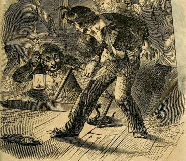

STEALING A NIGGER BABY Feontispiece
"My cloak flew open as I fell, and the force of the fall bursting its envelope, out, in all its hideous realities, rolled the infernal imp of darkness."
A TIGHT RACE CONSIDERIN' Title
"She tuk oflf her shoe, and the way a No. 10 go-to-meetin' brogan commenced givin' a hoss particular Moses, were a caution to hoss-flesh."
A RATTLE-SNAKE ON A STEAMBOAT .... Page 69
"But hardly had he reached the deck, when he discovered the monster—his head drawn back ready for striking."
VALERIAN AND THE PANTHER Page 101
"And the huge form of the dead panther was lying by my side, with the pocket holding the valerian firmly clenched in his teeth."
THE INDEFATIGABLE BEAR-HUNTER .... Page 175
" The way that bar's flesh giv' in to the soft impresshuns of that leg, war an honor to the mederkal perfeshun for having invented sich a weepun."
A STRUGGLE FOR LIFE
"Closer and firmer his gripe closed upon my throat, barring out the sweet life's breath."
THE CITY PHYSICIAN
THE SWAMP DOCTOR.
The city physician, or the country doctor of an old-settled locality, with all the appliances of cultivated and refined life around them ; possessing all the numberless conveniences and luxuries of the sick-room ; capable of controlling the many adverse circumstances that exert such a pernicious influence upon successful practice ; having at command the assistance, in critical and anomalous cases, of scientific and experienced coadjutors ; the facilities of good roads ; the advantages of comfortable dwellings, easy carriages, and the pleasures of commingling with a cultivated, mild, refined society, cannot fully realize and appreciate the condition of their less favoured, humble brethren, who, impelled by youthfulness, poverty, defective education, or the reckless spirit of adventure, have taken up their lot with society nearly in ■jts primitive condition, and dispense the blessings of their profession to the inhabitants of a country, where the obscure bridle-path, the unbridged water-courses, the deadened forest trees, the ringing of the woodman's axe, the humble log cabin, the homespun dress, and all the many sober, hard realities of pioneer life, attest the youth-fulness of the settlement.
The city physician may be of timorous nature and weak
(21)
and effeminate constitution : the " swamp doctor," whose midnight ride is often saluted by the scream of the panther, must be of courageous nature, and in physical endurance as hardy as one of his own grand alluvial oaks, whose canopy of leaves is many a night his only shelter.
The city physician may be of fastidious taste, and exquisiteness of feeling; the swamp doctor must have the unconcernedness of the dissecting-room, and be prepared to swallow his peck of dirt all at once.
The city physician must be of polished manners and courtly language : the swamp doctor finds the only use he has for bows, is to escape some impending one that threatens him with Absalomic fate ; the only necessity for courtly expression, to induce some bellicose << squatter" to pay his bill in something besides hot curses and cold lead.
The city physician, fast anchored in the sublimity of scientific expression, requires a patient to "inflate his lungs to their utmost capacity ;" the swamp doctor tells his to "draw a long breath, or swell your d—dest:" one calls an individual's physical peculiarities, " idiosyncrasy;" the other terms it " a fellow^'s nater."
The city physician sends his prescriptions to the drug store, and gives himself no regard as to the purity of the medicine ; each swamp doctor is his own pharmaden, and carries his drug store at the saddle.
The city physician rides in an easy carriage over well paved streets, and pays toll at the bridge; we mount a canoe, a pair of mud boots, sometimes a horse, and traverse, unmindful of exposure or danger, the sullen slough or angry river.
The city physician wears broadcloth, and looking in his hat reads, "Paris;" we adorn the outer man wuth homespun, and gazing at our graceful castors remember
the identical hollow tree in which we caught the coon that forms its fair outline and symmetrical proportions.
The city physician goes to the opera or theatre, to relax, and while away a leisure evening. The swamp doctor resorts for the same purpose to a deer or bear hunt, a bar-bacue or bran dance, and generally ends by becoming perfectly hilarious, and evincing a determination to sit up in order that he can escort the young ladies home before breakfast.
The city physician, compelled to keep up appearances, deems a library of a hundred authors a moderate collection ; the swamp doctor glories in the possession of " Gunn's Domestic Medicine," and the " Mother's Guide."
The city physician has a costly Parisian instrument for performing operations, and scorns to extract a tooth ; the swamp doctor can rarely boast of a case of amputating instruments, and practises dentistry with a gum lancet and a pair of pullikens.
The city physician, with intellect refined, but feelings vitiated by the corruptings and heart-hardenings of modern polished society, views with utter indifference or affected sympathy the dissolution of body and soul in his patients: but think you, we can see depart unmoved those with whom we have endured privations, have been knit like brothers together by our mutual dangers; with whom we have hunted, fished, and shared the crust and lowly couch; with whom we have rejoiced and sorrowed; think you we can see them go down to the grave with tearless eyes, with unmoved soul ? If we can, then blot out that expression so accordant with common sentiment, " God made the country, and man the town."
The city physician ^ends the poor to the hospital, and eventually to the dissecting-room ; we tend and furnish
24 THE CITY PHYSICIAN VS. THE SWAMP DOCTOR.
them gratuitously, and a proposal to dispose of them anatomically would, in all probability, put a knife into us.
One, with a sickly frame, anticipates old age; the other, with a vigorous constitution, knows that exposure and privation will cut him off ere his meridian be reached.
The city physician has soft hands, soft skin, and soft clothes: we have soft hearts but hard hands; we are rough in our phrases, but true in our natures; our words do not speak one language and our actions another ; what we mean we say, what we say we mean; our characters, when not original, are impressed upon us by the people we practise among and associate with, for such is the character of the pioneers and pre-emptionists of the swamp.
To sum up the whole, the city physician lives at the top of the pot, the swamp doctor scarcely at the rim of the skillet: one is a delicate carpet, which none but the nicest kid can press ; the other is a cypress floor, in which the hobnails of every clown can stamp their shape: one is the breast of a chicken, the other is a muscle-shell full of cat-fish: one is quinine, the other Peruvian bark: and so on in the scale of proportions.
I have contrasted the two through the busy, moving scenes of life ; let me keep the curtain from descending awhile, till I draw the last and awful contrast.
Stand by the death-bed of the two, in that last and solemn hour, when disease has prescribed for the patient, and death, acting the pharmacien, is filling the R. In a close, suffocating room, horizontalized on a feather bed ; if a bachelor, attended by a mercenary nurse; his departure eagerly desired by a host of expectant, envious competitors ; with the noise of drays, the shouts of the busy multitude, and the many discordant cries of the city
ringing through his frame, the soul of the city physician leaves its mortal tenement and wings its way to heaven through several floors and thicknesses of mortar and brick, whilst the sobs of his few true friends float on the air strangely mingled with "Pies all hot!" " The last 'erald!" and " Five dollars reward, five dollars reward, for the lost child of a disconsolate family !"
The swamp doctor is gathered unto his fathers 'neath the greenwood tree, couched on the yielding grass, with the soft melody of birds, the melancholy cadence of the summer wind, the rippling of the stream, the sweet smell of flowers, and the blue sky above bending down as if to embrace him, to soothe his spirit, and give his parting soul a glance of that heaven which surely awaits him as a recompense for all the privations he has endured on earth; whilst the pressure on his palm of hard and manly hands, the tears of women attached to him like a brother by the past kind ministerings of his Godlike calling, the sobs of children, and the boisterous grief of the poor negroes, attest that not unregarded or unloved he hath dwelt on earth : a sunbeam steals through the leafy canopy and clothes his brow with a living halo, a sweet smile pervades his countenance, and amidst all that is beauteous in nature or commendable in man, the swamp doctor sinks in the blissful luxuries of death; no more to undergo privation and danger, disease or suffering. He hath given his last pill, had his last draught protested against; true to the instincts of his profession, he, no doubt, in the battling troop of the angels above, if feasible, will still continue to charge.
2
MY EARLY LIFE.
Upon what slender hinges the gate of a man's life turns, and what trifling things change the tenor of his being, and determine in a moment the direction of a lifetime! Who inhales his modicum of azote and oxygen, that cannot verify in his own person that we are the creatures of circumstances, and that there is a hidden divinity that shapes our ends, despite the endeavours of the pedagogue, man, to paddle them out of shape ?
Some writer of celebrity has averred, and satisfactorily proven to all of his way of thinking, by a chain of logical deductions, that the w^ar of 1812, the victory of New Orleans, the elevation of Jackson to the presidency, the annexation of Texas, General Taylor's not possessing the proportions of Hercules, and a sad accident that occurred to one of the best of families very recently, all was the inevitable effect of a quiet unobtrusive citizen in Maryland being charged some many years ago with hog stealing.
Were I writing a library instead of a volume, I w^ould take up, for the satisfaction of my readers, link by link, the chain of consequences, from the mighty to the insignificant; also, if time and eternity permitted, trace the genealogy of the memorable porker (upon whose forcible seizure all these events depended), back to the time when Adam was not required to show a tailor's bill unpaid, as a portent of gentility, or Eve thought it a wife's duty to henpeck her husband.
As I cannot do this, I will, by an analogous example,
(26)
show that equally—to me at least—important consequences have been deduced from as unimportant and remote causes; and that the writing of this volume, my being a swamp doctor in 1848, and having been steamboat cook, cabin-boy, gentleman of leisure, plough-boy, cotton-picker, and almost a printer, depended when I was ten years old on a young lady wearing " No. 2" shoes, when common sense and the size of her foot whispered " fives." And now to show the connexion between these remote facts.
The death of my mother when I w^as very young breaking up our family circle, I became an inmate of the family of a married brother, whose wife, to an imperious temper, had, sadly for me. united the companionship of several younger brothers, whose associates I became when I entered her husband's door. Living in a free state, and his straitened circumstances permitting him but one hired servant, much of the family drudgery fell upon his wife, who up to my going there devolved a portion upon her brothers, but which all fell to my share as soon as I became domiciliated. I complained to my brother ; but it was a younger brother arraigning a loved wife, and we all know how such a suit would be decided. Those only who have lived in similar circumstances can appreciate my situation ; censured for errors and never praised for my industry, the scapegoat of the family and general errand-boy of the concern, waiting upon her brothers when I would fain have been at study or play, mine was anything but an enviable life. This condition of things continued until I had passed my tenth year, when, grown old by drudgery and wounded feelings, I determined to put into effect a long-cherished plan, to run away and seek my fortune wheresoever chance might lead or destiny determine.
By day and by night for several years this thought had been upon me; it had grown with my growth, and acquired strength from each day's developement of fresh indignities, filling me with so much resolution, that the boy of ten had the mental strength of twenty to effect such a purpose. I occupied my few leisure hours in building airy castles of future fortune and distinction, and in marking out the preparatory road to make Providence my guide, and have the world before me, where to choose.
One evening, just at sunset, I was seated on the lintel of the street-door, nursing one of my nephews, and affecting to still his cries, the consequence of a spiteful pinch I had given him, to repay some indignity offered me by his mother, when my attention was attracted to a young lady, who, apparently in much suffering, was tottering along, endeavouring to support herself by her parasol, which she used as a cane. To look at me now with my single bed, buttonless shirts, premature wigdom, and haggard old-bachelor looks, you would scarcely think I am or was ever an admirer of the sex. But against appearances I have always been one ; and boy as I was then, the sight of that young woman tottering painfully along, awoke all my sensibilities, and made the fountain of sympathy gush out as freely as a child swallowing lozenges. Overcoming my boyish diffidence, as she got opposite the door, I addressed her, " Miss, will you not stop and rest } I will get you a chair, and you can stay in the porch, if you will not come in the house." " Thank you, my little man," she gasped out, and attempted to seat herself in the chair I had brought, but striking her foot against the step the pain was so great, that she shrieked out, and fell dead, as I thought, on the floor.
Frightened terribly to think I had brought dead folks home, I joined my yell to her scream, as a prolongation,
which outcry brought my sister-in-law to the scene. The woman prevailing, she carried her in the house, and shutting the door to keep out curious eyes, which began to gather round, she set to restoring her uninvited guest, which she soon accomplished. As soon as she could speak, she gasped out, " Take them off, they are killing me !"— pointing to her feet. This, with difficulty, was effected, and their blood-stained condition showed how great must have been her torment. She announced herself as the daughter of a well-known merchant of the city, and begged permission to send me to her father's store, to request him to send a carriage for her. Assent being given, she gave me the necessary directions to find it, and off I started. It was near the river.
On my way to the place, as T reached the river, I overtook a gentleman apparently laden down with baggage. On seeing me he said, '<■ My lad, I will give you a quarter if you will carry one of these bundles down to that steamboat," pointing to one that w^as ringing her last bell previotis to starting to New Orleans. This was a world of money to me then, and I readily agreed. Increasing our pace, w^e reached just in time the steamer, between which and the place he had accosted me, I had determined, as the present opportunity was a good one, to put in execution my long-cherished plan, and run away from ray home then. Its accomplishment was easy. Following my employer on board, I received my quarter; but instead of going on shore, I secreted myself on board, until the continued puff of the steamer and the merry chant of the firemen assured me we were fairly under way, that I was fast leaving my late home and becoming a fugitive upon the face of the waters, dependent upon my childish exertions for my daily bread, without money, save the solitary quarter, without a change of clothes; no friend 2*
to counsel me save the monitor within, a heart made aged and iron by contumely and youthful suflTering.
Emerging from my concealment, I timidly sought the lower deck and sat me down upon the edge of the boat, and singling out some spark as it rose from the chimney, strove childishly to draw some augury of my future fate from its long continuance or speedy extinction.
The city was fast fading in the distance. I watched its receding houses, for, while they lasted, I felt as if I was not altogether without a home. A turn of the river hid it from sight, and my tears fell fast, for I was also leaving the churchyard which held my mother, and I then had not grown old enough to read life's bitterest page, to separate dream from reality, and know we could meet no more on earth ; for oftentimes in the quiet calm of sleep, in the lonely hours of night, I had seen her bending over my tear-wet pillow, and praying for me the same sweet prayer that she prayed for me when I was her sinless youngest born, and I thought in leaving her grave I should never see her more, for how, when she should rise again at night, would she be able to find me, rambler as I was ?
With this huge sorrow to dampen my joy at acquiring my liberty, chilled with the night air I was sinking into sleep in my dangerous seat, when the cook of the boat discovered me, and shaking me by the arm until I awoke, took me into the caboose, and giving me my supper, asked me, " What I was doing there, where I would be certain to fall overboard if I went to sleep ?" I made up a fictitious tale, and finishing my story, asked him if he could assist me in getting some work on the boat to pay my passage, hinting I was not without experience in his department, in washing dishes, cleaning knives, &c. This was just to his hand; promising me employment and
protection, he gave me a place to sleep in, which, fatigued as I was, I did not suffer long to remain unoccupied.
The morrow beheld me regularly installed as third cook or scullion, at eight dollars a month. This, to be sure, was climbing the world's ladder to fame and fortune at a snail's pace ; but I was not proud, and willing to bide my time in hope of the better day a-coming. My leisure hours, which were not few, were employed in studying my books, of wdiich I had a good supply, bought with money loaned me by my kind friend the cook.
I improved rapidly in my profession, till one day my ambition was gratified by being allowed to make the corn bread for the first cabin table. This I executed in capital style, with the exception of forgetting in my elation to sift the meal, thereby kicking up considerable of a stir when it came to be eaten, and causing my receiving a hearty curse for my carelessness, and a threat of a rope's end, the exercise of which I crushed by seizing a butcher knife in very determined style, and the affair passed over.
I remained on board until I had ascended as high as second cook, when I got disgusted with the kitchen and aspired to the cabin. I had heard of many cabin-boys becoming captain of their own vessels, but never of one cook,—except Captain Cook, and he became one from name, not by nature or profession. There being no
vacancy on board, I received my wages and hired at V •
as cabin boy on a small steamboat running as packet to a small town, situated on one of the tributaries of the Mississippi.
On my first trip up I recollected that I had a brother living in the identical town to which the steamer was destined, who had been in the south for several years.
and, when I last heard from him, was doing well in the world's ways.
I thought that as I would be landing every few days at his town, it would be only right that I should call and see him.
He was merchandising on a large scale, I was informed by a gentleman on board, a planter in one of the middle counties of Mississippi, who, seeing me reading in the cabin after I had finished my labour of the day, opened a conversation with me, and, extracting my history by his mild persuasiveness, offered to take me home with him, and send me to school until my education for a profession was completed. But my independence spurned the idea of being indebted to such an extent to a stranger; perhaps I was too enamoured of my wild roving life. I refused his offer, thanking him gratefully for the kind interest he seemed to take in me. He made me promise, that if I changed my mind soon, I would write to him, and gave me his direction, which I soon lost, and his name has passed from my recollection.
On reaching M—, I strolled up in town and inquired the way of a negro to Mr. Tensas' store. He pointed it out to me, and I entered. On inquiry for him, I found he was over at his dwelling-house, which I sought. It was a very pretty residence, I thought, for a bachelor; the walks were nicely gravelled, and shrubbery appropriately decorated the grounds.
I knocked at the door boldly; after a short delay it was opened by quite a handsome young finely dressed lady. Thinking I was mistaken in the house, I inquired if my brother resided there ? She replied, " that he did;" and invited me to wait, as he would soon be home. Walking in, after a short interval my brother came. Not remarking me at first, he gave the young lady a hearty
kiss, which she returned with interest. I concluded she must be his housekeeper. Perceiving me, he recognised me in a moment, and gave me an affectionate welcome, bidding me go and kiss my sister-in law, which, not waiting for me to do, she performed herself.
My brother w^as very much shocked when he heard of my menial occupation, and used such arguments and persuasives to induce me to forsake my boat-cabin for his house, that I at length yielded.
He intended sending me the next year to college, when the monetary crash came over the South, and the millionaire of to-day awoke the penniless bankrupt of the morrow. My brother strove manfully to resist the impending ruin, but fell like the rest, and I saw all my dreams of a collegiate education vanishing into thin smoke.
Why recount the scenes of the next five years ? it is but the thrice-told tale, of a younger brother dependent upon an elder, himself dependent upon others for employment and a subsistence for his family ; his circumstances would improve—I would be sent to school—fortune would again lower, and I, together with my sister-in-law, would perform the menial offices of the family.
My sixteenth birthday was passed in the cotton-field, at the tail of a plough, in the midst of my fellow-labourers, between whom and myself but slight difference existed. I was discontented and unhappy. Something within kept asking me, as it had for years, if it w^as to become a toiler in the cotton-fields of the South, the companion of negroes, that I had stolen from my boyhood's home ? was this the consummation of all my golden dreams ?
My prospects were gloomy enough to daunt a much older heart. Poverty shut out all hopes of a collegiate education and a profession. Reflection had disgusted me with a steamboat. I determined to learn a trade. My
taste for reading naturally inclined me to one in which I could indulge it freely: it was a printer's.
Satisfactory arrangments were soon made with a neighbouring printer and editor of a country newspaper. The day was fixed when he would certainly expect me ; if I did not come by that time he was to conclude that I had altei'ed my determination, and he would be free to procure another apprentice.
A wedding was to come off in the family for which I W'orked, in a short time, and they persuaded me to delay my departure a week, and attend it. I remained, thinking my brother would inform the printer of the cause of my detention. The wedding passed off, and the next morning, bright and early, I bid adieu, without a pang of regret, to my late home, and started for my new master's, but who was destined never to become such ; for on reaching the office I learnt that my brother had failed to inform him why I delayed, and he had procured another apprentice only the day before. So that wedding gave one subject less to the fraternity of typos, and made an indifferent swamp doctor of matter for a good printer.
I returned home on foot, wallet on my back, and resumed my cotton-picking, feeling but little disappointed. I had shaken hands too often with poverty's gifts to let this additional grip give me much uneasiness.
The season w^as nearly over, and the negroes were striving to get the cotton out by Christmas, when one night at the supper table—the only meal I partook of with the family—my brother inquired,
" How would you like to become a doctor, Madison .^"
I thought he was jesting, and answered merely with a laugh. Become a doctor, a professional man, when I was too poor to go to a common school, was it not ludicrous }
<< I am in earnest. Suppose a chance offered for you to become a student of medicine, would you accept it ?" he said.
It was not the profession I would have selected had wealth given me a choice, but still it was a means of acquiring an education, a door through which I might possibly emerge to distinction, and I answered, " Show me the way, and I will accept without hesitation."
He w'as not jesting. One of the first physicians in the state, taking a fancy to me, had offered to board me, clothe me, educate me in his profession, and become as a father to me, if I were willing to accept the kind offices at his hands.
I could scarcely realize the verity of what I had heard, yet 'twas true, and the ensuing new-year beheld me an inmate of the office of my benefactor.
He is now in his grave. Stricken down a soldier of humanity at his post, ere the meridian of life was reached. Living, he was called the widow's and orphan's friend, and the tears of all attested, at his death, that the proud distinction was undenied. I am not much, yet what I am he made me ; and when my heart fails to thrill in gratitude at the silent breathing of his name, may it be cold to the loudest tones of life.
Behold me, then, a student of medicine, but yesterday a cotton-picker, illustrating within my own person, in the course of a few years, the versatility of American pursuits and character.
I was scarcely sixteen, yet I was a student of medicine, and had been, almost a printer, a cotton-picker, plough-boy, gin-driver, gentleman of leisure, cabin-boy, cook, scullion, and runaway, all distinctly referable to the young lady before-mentioned wearing " No. 2'Sj" when her foot required " fiives."
GETTING ACQUAINTED WITH THE MEDICINES.
" Now, Mr. Tensas," said my kind preceptor, a few days after I had got regularly installed in the office, "your first duty must be to get acquainted with the different medicines. This is a Dispensatory—as you read of a drug you will find the majority mentioned on the shelves, take it down and digest"—here, unfortunately for the peace of mind and general welfare of a loafing Indian, who hung continually around the office, seeking what he might devour, or rather steal, the doctor was called away in a great hurry, and did not have time to finish his sentence, so " take it down and digest," were the last words that remained in my mind. '< Take it down and digest." By the father of physic, thought I, this study of medicine is not the pleasant task I anticipated—rather arduous in the long run for the stomach, I should judge, to swallow and digest all the medicines, from Abracadabra to Zinzibar. Why, some of them are vomits, and I'd like to know how they are to be kept down long enough to be digested. Now, as for tamarinds, or liquorice, or white sugar, I might go them, but aloes, and rhubarb, and castor-oil, and running your finger down your throat, are rather di"s-agreeable any way you can take them. I'm in for it, though ; I suppose it's.the way all doctors are made, and I have no claims to be exempted; and now for the big book with the long name.
I opened it upon a list of the metals. Leading them in <^he order that alphabetical arrangement entitled it to, was,
(36)
GETTING ACQUAINTED WITH THE MEDICINES. Ji
<' Arsenic: deadly poison. Best preparation, Fowler's Solution. Symptoms from an overdose, burning in the stomach, great thirst, excessive vomiting," &c., &c. With eyes distended to their utmost capacity, I read the dread enumeration of its properties. What! take this infernal medicament down, digest it, and run the chances of its not being an overdose } Can't think of it a moment. I'll go back to my plough first; but then the doctor knew all the dangers when he gave his directions, and he was so precise and particular, there cannot be any mistake. I'll take a look at it anyhow, and I hunted it up. As the Dispensatory preferred Fowler's Solution, I selected that. Expecting to find but a small quantity, I was somewhat surprised when I discovered it in a four-gallon bottle, nearly full. I took out the stopper, and applied it cautiously to my nose. Had it not been for the label, bearing, in addition to the name, the fearful word "Poison," and the ominous skull and cross-bones, I would have sworn it was good old Bourbon whiskey. Old Tubba, the Indian, was sitting in the office door, watching my proceedings with a great deal of interest. Catching the spirituous odour of the arsenical solution, he rose up and approached me eagerly, saying, "Ugh; Injun want whiskey; give Tubba whiskey; bring wild duck, so many," holding up two of his fingers. The temptation was strong, I must confess. The medicines had to be tested, and I felt very much disinclined to depart this life just then, when the pin feathers of science had just commenced displacing the soft down of duck-lingdom ; but this Indian, he is of no earthly account or use to any one ; no one would miss him, even were he to take an overdose ; science often has demanded sacrifices, and he would be a willing one ; but—it may kill him ; I can't do it; to kill a man before I get my diploma will be murder; a jury might not so pronounce it, but conscience 3
\vould ; I can't swallow it, and Tubba must not. These were the tljoughts that flaslied through my mind before i replied to the Indian's request, ." Indian can't have whiskey. Tubba drink whiskey—Tubba do so." Here I endeavoured to go through the pantomime of dying, as I was not master of sufficient Choctaw to explain myself. I lifted a glass to my mouth and pretended to empty it, then gave a short yell, clapping my hands over my stomach, staggering, jerking my hands and feet about, as I fell on the tloor, repeating the yells, then turned on my face and lay still as though I was dead. But to my chagrin, all this did not seem to affect the Indian with that horror that I intended, but on the contrary, he grunted out a series of ughs, expressive of his satisfaction, saying, " Ugh; Tubba want get drunk too."
The dinner hour arriving, I dismissed old Tubba, and arranging my toilet, walked up to the dwelling-house, ■ near half a mile distant, where I was detained several*^ hours by the presence of company, to whom I was forced to do the honours, the doctor not having returned.
At length I got released, and returned to the office, resolving to suspend my studies until I could have a talk with my preceptor ; for, even on my ignorant mind, the shadow of a doubt was falling as to whether there might not be some mistake in my understanding of his language.
Entering the office, my eyes involuntarily sought the Solution of Arsenic, Father of purges and pukes, it was gone ! " Tubba, you're a gone case, I ought to have hidden it. I might have known he would steal it after ■ smelling the whiskey ; poor fellow ! it's no use to try and find him, he's struck a straight line for the swamp ; poor fellow! it's all my fault," Thus upbraiding myself for my carelessness, I walked back into my bedroom. And my
astonishment may be imagined, when I discovered the filthy Indian tucked in nicely between my clean sheets.
To all appearances he was in a desperate condition, the fatal bottle lying hugged closely in his embrace, nearly empty. He must be suffering awfully, thought I, when humanity had triumphed over the indignation I felt at the liberties he had taken, but Indian-like, he bears it without a groan. Well has his race been called " the stoics of the wood, the men without a tear." But I must not let him die without an effort to save him. I don't know what to do myself, so I'll call in Dr. B., and away I posted ; but Dr. B. was absent; so was Dr. L. ; and in fact every physician of the town. Each office, however, contained one or more students ; and as half a loaf is better than no bread, I speedily informed them of the condition of affairs, and quickly, like a flock of young vultures, we were thronging around the poisoned Indian, to what we would soon have rendered the harvest of death.
"Stomach pump eo instanti!" said one; "Sulphas Zinci cum Decoction Tabacum!" said another; " Venesection!" suggested athird. "Puke of Lobelia!" suggested a young disciple of Thompson, who self-invited had joined the conclave, "Lobelia. Number six, pepper tea, yaller powders, I say !" " Turn him out! Turn him out! What right has young Roots in a mineral consultation ? Turn him out!"—and heels over head, out of the room, through the middle door, and down the office steps, went "young Roots," impelled by the whole body of the enraged " regulars" — save myself, who, determined amidst the array of medical lore not to appear ignorant, wisely held my tongue and rubbed the patient's feet with a greased rag. Again arose the jargon of voices.
"SulphasZinci—Stomach, Arteri,pump,otomy-must— legs—hot-toddy—to bleed him—lectricity—hot blister—
flat-irons—open his—windpipe ;" but still I said never a word, but rubbed his feet, wondering whether I would ever acquire as much knowledge as my fellow students showed the possession of. By the by, I was the only one that was doing anything for the patient, the others being too busy discussing the case to attend to the administration of any one of the remedies proposed.
"I say stimulate, the system is sinking," screamed a tall, stout-looking student, as the Indian slid down towards the foot of the bed.
" Bleeding is manifestly and clearly indicated," retorted a bitter rival in love as well as medicine, " his muscular action is too excessive," as Tubba made an ineffectual effort to throw his body up to the top of the mosquito bar.
" Bleeding would be as good as murder," said Number 1.
" Better cut his throat than stimulate him," said Number 2.
"Pshaw!"
"Fudge!"
"Sir!"
"Fellow!"
"Fool!"
<'Liar!"
Vim! Vim! and stomach-pump and brandy bottle flashed like meteors.
" Fight! fight! form a ring! fair play!"
" You're holding my friend."
" You lie ! You rascal!"
Vim ! Vim! from a new brace of combatants.
" He's gouging my brother! I must help ! foul play!"
" Let go my hair!" Vim! Vim! and a triplet went at it.
I stopped rubbing, and looked on with amazement, " Gentlemen, this is unprofessional! 'tis undignified ! 'tis disgraceful! stop, I command you!" I yelled, but no one regarded me; some one struck me, and away I pitched into the whole lot promiscuously, having no partner, the patient dying on the bed whilst we were studying out his case.
" Fight! fight!" I heard yelled in the street, as I had finished giving a lick all round, and could hardly keep pitching into the mirror to whip my reflection, I wanted a fight so bad.
"Fight! fight! inD 's back office!" and here came
the whole town to see the fun.
"I command the peace!" yelled Dick Locks; "I'm the mayor."
" And I'm the boss for you !" screamed I, doubling him up with a lick in the stomach, which he replied to by laying me on my back, feeling very faint, in the opposite corner of the room.
"I command the peace !" continued Dick, flinging one of the combatants out of the window, another out of the door, and so on alternately, until the peace was preserved by nearly breaking its infringers to pieces.
" What in the devil, Mr. Tensas, does this mean .?" said my preceptor, who at that moment came in ; " what does all this fighting, and that drunken Indian lying in your bed, mean.'' have you all been drunk.'"'
" He has poisoned himself, sir, in my absence, with the solution of arsenic, which he took for whiskey ; and as all the doctors were out of town, I called in the students, and they got to fighting ovr'rhim whilst consulting ;" I replied, very indignantly, enraged at the insinuation that we had been drinking.
" Poisoned with solution of arsenic, ha! ha! oh! lord! 3*
ha!" and my preceptor, throwing his burly form on the floor, rolled over and over, making the office ring with his laughter—<<poisoned, ha! ha!"
" Get out of this, you drunken rascal!" said he to the dying patient, applying his horse-whip to him vigorously. It acted like a charm: giving a loud yell of defiance, the old Choctaw sprang into the middle of the floor.
"Whoop! whiskey lour! Injun big man, drunk heap. "Whoop! Tubba big Injun heap !" making tracks for the door, and thence to the swamp.
The truth must out. The boys had got into the habit of making too free with my preceptor's whiskey; and to keep off" all but the knowing one, he had labelled it, " Solution of Arsenic."
A TIGHT RACE CONSIDERIN'.
During my medical studies, passed in a small village in Mississippi, I became acquainted with a family named Hibbs (a nom, de plume of course), residing a few miles in the country. The family consisted of Mr. and Mrs. Hibbs and son. They were plain, unlettered people, honest in intent and deed, but overflowing Avith that which amply made up for all their deficiencies of education, namely, warm-hearted hospitality, the distinguishing trait of southern character. They were originally from Virginia, from whence they had emigrated in quest of a clime more genial, and a soil more productive than that in which their fathers toiled. Their search had been rewarded, their expectations realized, and now,
in their old age, though not wealthy in the " Astorian" sense, still they had sufficient to keep the << wolf from the door," and drop something more substantial than condolence and tears in the hat that poverty hands round for the kind offerings of humanity.
The old man was like the generality of old planters, men whose ambition is embraced by the family or social circle, and whose thoughts turn more on the relative value of " Sea Island" and " Mastodon," and the improvement of their plantations, than the " glorious victories of Whig-gery in Kentucky," or the " triumphs of democracy in Arkansas."
The old lady was a shrewd, active dame, kind-hearted and long-tongued, benevolent and impartial, making her coffee as strong for the poor pedestrian, with his all upon his back, as the broadcloth sojourner, with his " up-country pacer." She was a member of the church, as well as the daughter of a man who had once owned a race-horse : and these circumstances gave her an indisputable right, she thought, to " let on all she knew," when religion or horse-flesh was the theme. At one moment she would be heard discussing whether the new " circus rider," (as she always called him,) was as affecting in Timothy as the old one was pathetic in Paul, and anon (not anonymous, for the old lady did everything above board, except rubbing her corns at supper), protecting dad's horse from the invidious comparisons of some visiter, who, having heard, perhaps, that such horses as Fashion and Boston existed, thought himself qualified to doubt the old lady's assertion that her father's horse '< Shumach" had run a mile on one particular occasion. " Don't tell me," was her never failing reply to their doubts, <« Don't tell me 'bout Fashun or Bosting, or any other beating <■ Shumach' a fair race, for the thing was unfesible ; did'nt he run a mile a minute
by Squire Dim's watch, which always stopt 'zactly at twelve, and did'nt he start a minute afore, and git out, jes as the long hand war givin' its last quiver on ketchin' the short leg of the watch ? And didn't he beat everything in Virginny 'cept once ? Dad and the folks said he'd beat then, if young Mr, Spotswood hadn't give 'old Swaga,' Shumach's rider, some of that ' Croton w^ater,' (that them Yorkers is makin' sich a fuss over as bein' so good, when gracious knows, nothin' but what the doctors call interconception could git me to take a dose) and jis 'fore the race Swage or Shumach, I don't 'stinctly 'member which, but one of them had to <-let down,'' and so dad's boss got beat."
The son I will describe in few words. Imbibing his parents' contempt for letters, he was very illiterate, and as he had not enjoyed the equivalent of travel, was extremely ignorant on all matters not relating to hunting or plantation duties. He was a stout, active fellow, with a merry twinkling of the eye, indicative of humour, and partiality for practical joking. We had become very intimate, he instructing me in " forest lore," and I, in return, giving amusing stories, or, what was as much to his liking, occasional introductions to my hunting-flask.
Now that I have introduced the " Dramatis Personse," I will proceed with my story. By way of relaxation, and to relieve the tedium incident more or less to a student's life, I would take my gun, walk out to old Hibbs's, spend a day or two, and return refreshed to my books.
One fine afternoon I started upon such an excursion, and as I had upon a previous occasion missed killing a fine buck, owing to my having nothing but squirrel shot, I determined to go this time for the " antlered monarch," by loading one barrel with fifteen "blue whistlers," reserving the other for small game.
At the near end of the plantation was a fine spring, and adjacent, a small cave, the entrance artfully or naturally-concealed, save to one acquainted with its locality. The cave was nothing but one of those subterraneous washes so common in the west and south, and called " sink holes." It was known only to young H. and myself, and we, for peculiar reasons, kept secret, having put it in requisition as the depository of a jug of '< old Bourbon," which we favoured, and as the old folks abominated drinking, we had found convenient to keep there, whither we would repair to get our drinks, and return to the house to hear them descant on the evils of drinking, and " vow no < drap,' 'cept in doctor's truck, should ever come on their plantation."
Feeling very thirsty, I took my w^ay by the spring that evening. As I descended the hill o'ertopping it, I beheld the hind parts of a bear slowly being drawn into the cave. My heart bounded at the idea of killing a bear, and my plans were formed in a second. I had no dogs—the house was distant—and the bear becoming " small by degrees, and beautifully less." Every hunter knows, if you shoot a squirrel in the head when it's sticking out of a hole, ten to one he'll jump out; and I reasoned that if this were true regarding squirrels, might not the operation of the same principle extract a bear, applying it low down in the back.
Quick as thought I levelled my gun and fired, intending to give him the buckshot when his body appeared ; but what was my surprise and horror, when, instead of a bear rolling out, the parts were jerked nervously in, and the well-known voice of young H. reached my ears.
"Murder! Hingins! h—1 and kuckle-burs! Oh! Lordy! 'nuff!—'nulf!— take him off! Jis let me off this wunstj dad, and I'll never run mam's colt again! Oh!
Lord}'! Lordy! all my brains Mowed clean out! Snakes! snakes!" yelled he, in a shriller tone, if possible, " H—1 on the outside and snakes in the sink-hole! I'll die a Christian, anyhow, and if I die before I wake," and out scrambled poor H., pursued by a large black-snake.
If my life had depended on it, I could not have re- -strained my laughter. Down fell the gun, and down dropped I shrieking convulsively. The hill was steep, and over and over I went, until my head striking against a stump at the bottom, stopped me, half senseless. On recovering somewhat from the stunning blow, I found Hibbs upon me, taking satisfaction from me for having blowed out his brains. A contest ensued, and H. finally relinquished his hold, but I saw from the knitting of his brows, that the bear-storm, instead of being over, was just brewing. " Mr. Tensas," he said with awful dignity, " I'm sorry I put into you 'fore you cum to, but you're at yourself now, and as you've tuck a shot at me, it's no more than far I should have a chance 'fore the hunt's up."
It was with the greatest difficulty I could get H. to bear with me until I explained the mistake ; but as soon as he learned it, he broke out in a huge laugh. " Oh, Dod busted! that's 'nuff; you has ray pardon. I ought to know'd you didn't 'tend it; 'sides, you jis scraped the skin. I war wus skeered than hurt, and if you'll go to the house and beg me off from the old folks, I'll never let on you cuddent tell copperas breeches from bar-skin."
Promising that I would use my influence, I proposed taking a drink, and that he should tell me how he had incurred his parent's anger. He assented, and after we had inspected the cave, and seen that it held no other serpent than the one we craved, we entered its cool recess, and II. commenced.
" You see, Doc, I'd Leered so much from mam 'bout her dad's Shumach and his nigger Swage, and the mile a minute, and the Croton water what was gin him, and how she bleved that, if it warn't for bettin', and the cussin' and fightin', running race-hosses warn't the sin folks said it war; and if they war anything to make her 'gret gettin' religion and jinin' the church, it war cos she couldn't 'tend races, and have a race-colt of her own to comfort her 'clinin' years, sich as her daddy had afore her, till she got me ; so I couldn't rest for wantin' to see a hoss-race, and go shares, p'raps, in the colt she war wishin' for. And then I'd think what sort of a boss I'd want him to be —a quarter nag, a mile critter, or a boss wot could run ^fur all mam says it can't be did) a whole four mile at a stretch. Sometimes I think I'd rather own a quarter nag, for the suspense wouldn't long be hung, and then w^e could run up the road to old Nick Bamer's cow-pen, and Sally is almost allers out thar in the cool of the evenin'; and in course we wouldn't be so cruel as to run the poor critter in the heat of the day. But then agin, I'd think I'd rather have a miler, — for the 'citement would be greater, and w^e could run down the road to old Wither's orchard, an' his gal Miry is frightfully fond of sunnin' herself thar, when she 'spects me 'long, and she'd hear of the race, certain ; but then thar war the four miler for my thinkin', and I'd knew'd in such case the 'citement would be greatest of all, and you know, too, from dad's stable to the grocery is jist four miles, an' in case of any 'spute, all hands would be willin' to run over, even if it had to be tried a dozen times. So I never could 'cide on which sort of a colt to wish for. It was fust one, then t'others, till I was nearly 'stracted, and when mam, makin' me religious, told me one night to say grace, I jes shut my eyes, looked pious, and yelled out, ' D—n it,
go!' and in 'bout five minutes arter, came near kickin' dad's stumak off, under the table, thinkin' I war spurrin' my critter in a tight place. So I found the best way was to get the boss fust, and then 'termine whether it should be Sally Earners, and the cow-pen ; Miry Withers, and the peach orchard; or Spillman's grocery, with the bald face.
" You've seed my black colt, that one that dad's father gin me in his will when he died, and I 'spect the reason he wrote that will war, that he might have wun then, for it's more then he had when he was alive, for granma war a monstrus overbearin' woman. The colt would cum up in my mind, every time I'd think whar I was to git a boss. < Git out!' said I at fust— he never could run, and 'sides if he could, mam rides him now, an he's too old for anything, 'cept totin her and bein' called mine ; for you see, though he war named Colt, yet for the old lady to call him old, would bin like the bar 'fecting contempt for the rabbit, on account of the shortness of his tail.
«' Well, thought I, it does look sorter unpromisin', but its colt or none ; so I 'termined to put him in trainin' the fust chance. Last Saturday, who should cum ridin' up but the new cirkut preacher, a long-legged, weakly, sickly, never-contented-onless-the-best-on-the-plantation-war-cooked-fur-him sort of a man ; but I didn't look at him twice, his boss was the critter that took my eye; for the minute I looked at him, I knew him to be the same boss as Sam Spooner used to win all his splurgin' dimes with, the folks said, and wot he used to ride past our house so fine on. The boss war a heap the wuss for age and change of masters; for preachers, though they're mity 'ticular 'bout thar own comfort, seldom tends to thar bosses; for one is privit property and 'tother generally
borried. I seed from the way the preacher rid, that he didn't kriow the animal he war straddlin'; but I did, and I 'termined I wouldn't lose sich a chance of trainin' Colt by the side of a boss wot had run real races. So that night, arter prayers and the folks was abed, I and Nigger Bill tuck the bosses and carried them down to the pastur'. It war a forty-aker lot, and consequently jist a quarter across—for I thought it best to promote Colt, by degrees, to a four-miler. When we got thar, the preacher's boss showed he war willin'; but Colt, dang him! commenced nibblin' a fodder-stack over the fence. I nearly cried for vexment, but an idea struck me ; I hitched the critter, and told Bill to get on Colt and stick tight wen I giv' the word. Bill got reddy, and unbeknownst to him I pulled up a bunch of nettles, and, as I clapped them under Colt's tail, yelled, ' Go !' Down shut his graceful like a steel-trap, and.away he shot so quick an' fast that he jumpt clean out from under Bill, and got nearly to the end of the quarter 'fore the nigger toch the ground : he lit on his head, and in course warn't hurt—so we cotched Colt, an' I mounted him.
<< The next time I said ' go' he showed that age hadn't spiled his legs or memory. Bill 'an me 'greed we could run him now, so Bill mounted Preacher and we got ready. Thar war a narrer part of the track 'tween two oaks, but as it war near the end of the quarter, I 'spected to pass Preacher 'fore we got thar, so I warn't afraid of barkin' my shins.
" We tuck a fair start, and off we went like a peeled ingun, an' I soon 'scovered that it warn't such an easy matter to pass Preacher, though Colt dun delightful; we got nigh the trees, and Preacher warn't past yet, an' I 'gan to get skeered, for it warn't more than wide enuf for a horse and a half; so I hollered to Bill to hold up, but 4
the imperdent nigger turned his ugly pictur, and said, 'he'd be cussed if he warn't goin' to play his han' out.' I gin him to understand he'd better fix for a foot-race when we stopt, and tried to hold up Colt, but he wouldn't stop. We reached the oaks, Colt tried to pass Preacher, Preacher tried to pass Colt, and cowollop, crosh, cochunk! we all cum down like 'simmons arter frost. Colt got up and won the race; Preacher tried hard to rise, but one hind leg had got threw the stirrup, an' tother in the head stall, an' he had to lay still, doubled up like a long nigger in a short bed. I lit on my feet, but Nigger Bill war gone entire. I looked up in the fork of one of the oaks, and thar he war sittin', lookin' very composed on surroundin' nature. I couldn't git him down till I promised not to hurt him for disobeyin' orders, w^hen he slid down. We'd 'nufF racin' for that night, so we put up the bosses and went to bed,
" Next morning the folks got ready for church, when it was diskivered that the bosses had got out. I an' Bill started oflf to look for them ; w^e found them cleer off' in the field, tryin' to git in the pastur' to run the last night's race over, old Blaze, the reverlushunary mule, bein' along to act as judge.
" By the time we got to the house it war nigh on to meet-in' hour; and dad had started to the preachin', to tell the folks to sing on, as preacher and mam would be 'long bimeby. As the passun war in a hurry, and had been complainin' that his creetur w^ar dull, I 'suaded him to put on uncle Jim's spurs what he fotch from Mexico. I saddled the passun's boss, takin' 'ticular pains to let the saddle-blanket come down low in the flank. By the time these fixins war threw, mam war 'head nigh on to a quarter. <■ We must ride on, passun,' I said, < or the folks '11 think we is lost.' So I whipt up the mule I rid,
the passun chirrupt and chuct to make his crittur gallop, but the animal didn't mind him a pic. I 'gan to snicker, an' the passun 'gan to git vext; sudden he thought of his spurs, so he ris up, an' drove them vim in his hoss's flanx, till they went through his saddle-blanket, and like to bored his nag to the holler. By gosh! but it war a quickener—the boss kickt till the passun had to hug him round the neck to keep from pitchin' him over his head. He next jumpt up 'bout as high as a rail fence, passun holdin' on and tryin' to git his spurs—but they war lockt— his breeches split plum across with the strain, and the piece of wearin' truck wot's next the skin made a monstrous putty flag as the old boss, like drunkards to a bar-bacue,streakt it up the road.
"Mam war ridin' slowly along, thinkin' how sorry she was, cos Chary Dolin, who always led her oflT, had sich a bad cold, an' wouldn't be able to 'sist her singin' to-day. She war practisin' the hymns, and had got as far as whar it says, ' I have a race to run,' when the passun huv in sight, an' in 'bout the dodgin' of a diedapper, she found thar war truth in the words, for the colt, hearin' the boss eumin' up behind, began to show symptoms of runnin'; but when he heard the passun holler 'wo! wo!' to his hoss, he thought it war me shoutin' < go!' and sure 'nuff off they started jis as the passun got up even ; so it war a fair race. Whoop ! git out, but it war egsitin'—the dust flew, and the rail-fence appeered strate as a rifle. Thar war the passun, his legs fast to the critter's flanx, arms lockt round his neck, face as pale as a rabbit's belly, and the white flag streemin' far behind—and thar war Mam, fust on one side, then on t'other, her new caliker swelled up round her like a bear with the dropsy, the old lady so much surprized she cuddent ride steddy, an' tryin' to stop her colt, but he war too well trained to stop while he heard
< go!' Mam got 'sited at last, and her eyes 'gan to glimmer like she seen her daddy's ghost axin' ' if he ever trained up a child or a race-hoss to be 'fraid of a small brush on a Sunday,' she commenced ridin' beautiful ; she braced herself up in the saddle, and began to make calkerlations how she war to win the race, for it war nose and nose, and she saw the passun spurrin' his critter every jump. She tuk off her shoe, and the way a number ten go-to-meetin' brogan commenced givin' a boss particular Moses, were a caution to hoss-flesh—but still it kept nose and nose. She found she war carryin' too much weight for Colt, so she 'gan to throw off plunder, till nu-thin' was left but her saddle and close, and the spurs kept tellin' still. The old woman commenced strippin' to lighten, till it wouldn't bin the clean thing for her to have taken off one dud more ; an' then when she found it war no use while the spurs lasted, she got cantankerous. ' Passun,' said she, ' I'll be cust if it's fair or gentlemanly for you, a preacher of the gospel, to take advantage of an old woman this way, usin' spurs when you know she can't wear 'em—'taint Christian-like nuther,' and she burst into cryin'. ' Wo ! Miss Hibbs ! Wo! Stop ! Madam ! Wo! Your son!'—he attempted to say, when the old woman tuck him on the back of the head, and fill-in' his mouth with right smart of a saddle-horn, and stop-pin' the talk, as far as his share went for the present.
" By this time they'd got nigh on to the meetin'-house, and the folks were harkin' away on < Old Hundred,' and wonderin' what could have become of the passun and mam Hibbs. One sister in a long beard axt another brethren in church, if she'd heered anything 'bout that New York preecher runnin' way with a woman old enough to be his muther. The brethrens gin a long sigh an' groaned ' it ain't possible! marciful heavens! you don't
'spicion ?' wen the sound of the hosses comin', roused them up like a touch of the agur, an' broke off their sarpent-talk. Dad run out to see what was to pay, but when he seed the hosses so close together, the passun spurrin', and mam ridin' like close war skase whar she cum, he knew her fix in a second, and 'tarmined to help her; so clinchin' a sap-lin', he hid 'hind a stump 'bout ten steps off, and held on for the hosses. On they went in beautiful style, the passun's spurs tellin' terrible, and mam's shoe operatin' ' no small pile of punkins,'—passun stretched out the length of two hosses, while mam sot as stiff and strate as a bull yearling in his fust fight, hittin' her nag, fust on one side, next on t'other, and the third for the passun, who had chawed the horn till little of the saddle, and less of his teeth war left, and his A^oice sounded as holler as a jackass-nicker in an old saw-mill.
<« The hosses war nose nnd nose, jam up together so close that mam's last kiveyin' and passun's flag had got lockt, an' 'tween bleached domestic and striped linsey made a beautiful banner for the pious racers.
<' On they went like a small arthquake, an' it seemed like it war goin' to be a draun race ; but dad, when they got to him, let down with all his might on colt, scarin' him so bad that he jumpt clean ahead of passun, beatin' him by a neck, buttin' his own head agin the meetin'-house, an' pitchin' mam, like a lam for the sacryfise, plum through the winder 'mongst the mourners, leavin' her only garment flutterin' on a nail in the sash. The men shot their eyes and scrambled outen the house, an' the women gin mam so much of their close that they like to put themselves in the same fix.
" The passun quit the circuit, and I haven't been home yet." 4*
TAKING GOOD ADVICE.
" Poor fellow! if he had only listened to me! but he wouldn't take good advice," is the trite exclamation of the worldling w^hen he hears that some friend has cut his throat, impelled by despair, or has become bankrupt, or employed a famous physician, or is about to get married, or has applied for a divorce, or paid his honest debts, or committed any deprecated act, or become the victim of what the world calls misfortune ; '< poor fellow, but he wouldn't take good advice." Take good advice ! yes, if I had obeyed what is called good advice, I would be now in my grave ; as it is, I am sdll on a tailor's books, the best evidence of a man's being alive.
When I was a boy my friends were continually chiding me for my half bent position in sitting or walking, and since I have become a man the cry is still the same, " Why don't you walk straight, Madison? hold up your head."
Had I obeyed them, a tree-top that fell upon me whilst visiting a patient lately, crushing my shoulder and bruising my back, would have fallen directly upon my head, and shown, in all probability, the emptiness of earthly things. This is one instance showing that good advice is not always best to be taken; but I have another, illustrating my position still more strongly.
Whilst a medical student, I was travelling on one of the proverbially fine and accommodating steamers that ply between Vicksburg and New Orleans. Before my departure, the anxious affection of a female friend made her
(54)
exact a promise from me not to play cards; but the peculiarity of the required pledge gave me an opportunity of fulfilling it to the letter, but breaking it as to the spirit. " You've promised me, Madison, not to play cards whilst you're on earth: see that you keep it." I assured her I would do so, as it applied only to shore, and when the boat was on a sand-bar. It was more her friendly solicitude than any real necessity in my habits, that made her require the promise, as I never played except on steamboats, and then only at night, when the beautiful scenery that skirts the river cannot be seen or admired.
It was a boisterous night above in the heavens, making the air too cool for southern dress or nerves, so the cabin and social hall were densely crowded, not a small proportion engaged in the mysteries of that science which requires four knaves to play or practise it. I had not yet sat down, but showed strong premonitory symptoms of being about to do so, when my arm was gently taken by an old friend, who requested me to walk with him into our state-room. " Madison," said the old gentleman, " I want to give you some good advice. I see you are about to play cards for money; you are a young man, and consequently have but little knowledge of its pernicious effects. I speak from experience ; and apart from the criminality of gambling, I assure you, you will have but little chance of winning in the crowd you intend playing with: in fact, you are certain to lose. Now promise me you won't play, and I shall go to bed with the satisfaction that I have saved you from harm," The charm was laid too skilfully upon me; I would not promise, for what was I to do in the long nights of present and future travel ? so my old friend gave me up in despair, and retired to rest, whilst I sought the card-table.
Young and inexperienced as I was, an unusual strain
of good luck attended me ; and when the game broke up at daylight. I was considerably ahead of the hounds.
I retired to my state-room to regain my lost sleep, and soon was oblivious of everything. How long I slept I do not know: my dreams ran upon the past game ; and just as I held "four aces," and had seen my opponent's two hundred and went him four hundred dollars better, I was aroused from my slumbers by the confused cries of <' Fire ! Back her! Stop her! She'll blow up when she strikes!" and a thousand-and-one undistinguishable sounds, but all indicative of intense excitement and alarm.
Stopping for nothing, I made one spring from my berth into the middle of the cabin, alighting on the deserted breakfast-table, amidst the crash of broken crockery; three jumps more were taken, which landed me up on the hurricane-deck, where I found nearly all the passengers, male and female, assembled in a fearful state of alarm, preventing by their outcry the necessary orders, for the preservation of the boat, from being heard. I took in the whole scene at a glance. I forgot to mention, when I retired to rest, the wind was blowing to such a degree that every gust threatened to overset the boat. The captain, who was a prudent, sensible man, had tied his boat to the shore, waiting for the storm to subside. After the lapse of a few hours, a calm having ensued, he cast loose, intending to proceed on his way; but scarcely had he done so, when the wind, suddenly increasing, caught the boat, and, in despite of six boilers and the helm hard down, was carrying her directly across the Mississippi, towards the opposite shore, where a formidable array of old "poke-stalks" and low, bluff banks were eagerly awaiting to impale us upon the one hand, or knock us into a cocked hat upon the other. At this time I arrived upon
the scene—the boat was nearly at the shore, the waters boiling beneath her bows like an infernal cauldron.
Great as was the danger, there were still some so reckless as to make remarks upon my unique appearance, and turn the minds of many from that condition of religious revery and mental casting up and balancing of accounts, which the near proximity to death so imminently required ; and certainly I did look queer—no boots, no coat, no drawers—but, lady reader, don't think my bosom was false, and I had no subuculus on. " I didn't have anything else" on—more truth than poetry, I ween. Sixteen young ladies, unmindful of danger, ran shrieking away ; fourteen married ones walked leisurely to the stern of the boat, where the captain had been vainly before trying to drive them ; whilst two old maids stood and looked at me in unconscious astonishment, wonderful amazement, and inexpressible surprise.
" Look out!" rang the shrill voice of the captain ; and, with a dull, heavy thump, the boat struck the bank, jarring the marrow of every one on board, save myself—for, just before she struck, I calculated the distance, made my jump, landed safely, and was snugly ensconced behind a large log, hallooing for some one to bring me my clothes.
No damage of consequence, contrary to expectations, was done our craft; and after digging her out of the bank, we proceeded on our way, a heavy rain having succeeded the storm.
I was lying in my state-room, ruminating sadly over the pleasureableness of being the laughing-stock of the whole boat, when my old adviser of the night previous entered the room, with too much laughter on his face to make his coming moral deduction of much force.
" You see now, Madison, the result of not having fol-
lowed my advice. Had you been governed by me, the disagreeable event of the morning v^^ould never have occurred ; you would have been in bed at the proper hour, slept during the proper hours, been ready dressed as a consequence at the breakfast hour, and not been the cause of such a mortal shock to the delicacy of so many delicate females, besides making a d—d unanimous fool of yourself."
I said but little in reply, but thought a great deal. I kept my room the balance of the trip, sickness being my plea.
I transacted my business in the city, and chance made my old adviser and myself fellow-passengers and roommates again, on our upward trip. Night saw me regularly at the card-table, and my old friend at nine o'clock as constantly in bed.
It was after his bed-hour when we reached Grand Gulf, where several lady-passengers intended leaving. They were congregated in the middle of the gentlemen's cabin, bringing out baggage and preparing to leave as soon as the boat landed.
At the landing a large broad-horn was lazily sleeping, squatted on the muddy waters like a Dutch beauty over a warming-pan. Her steering-oar—the broad-horn's, not the beauty's—instead of projecting, as custom and the law requires, straight out behind, had swung round, and stood capitally for raking a boat coming up along side. The engines had stopped, but the boat had not lost the impetus of the steam, but was slowly approaching the broad-horn, when a crash was head—a state-room door was burst open, and out popped my ancient comrade, followed up closely by a sharp stick, in the shape of the greasy handle of the steering-oar. It passed directly
tbrough my berth, and would undeniably have killed me, had I been in it.
It was my turn to exult now. I pulled «< Old Advice" out from under the table, and, as I congratulated him on his escape, maliciously added, " You see, now, that playing cards is not totally unattended with good effects. Had I, agreeably to your advice, been in bed, I would now be a mangled corpse, and you enjoying the satisfaction that it was your counsel that had killed me; whilst, on the other hand, had you been playing, you would have escaped your fright, and the young ladies from Nankin in all probability would never have known you slept in a red bandana." I made a convert of him to my side ; we sat down to a quiet game, and before twelve that niffht he broke me flat.
THE DAY OF JUDGMENT.
Every one is acquainted with the horror that the presence of the small-pox, or the rumour—which is as bad—of its being in the neighbourhood, excites. A planter living some thirty or forty miles from where I was studying, had returned from New Orleans, where he had contracted, as it afterwards turned out, the measles, but which, on their first appearance, had been pronounced by a young, inexperienced physician, who was first in attendance, an undoubted case of small-pox. The patient was a nervous, excitable man, and consequently very much alarmed; wishing further advice, he posted a boy after my preceptor,
who, desirous of giving me an opportunity of seeing the disease, took me with him.
The planter lived near a small town in the interior, now no more, but which, in the minds of its projectors —judging from its lithographed map—was destined to rival the first cities of the land. The nature of the disease was apparent in a moment to my preceptor's experienced eye; but the excitability and fear of the patient had aggravated the otherwise simple disease, so that it presented some really alarming symptoms.
A liberal administration of the brandy bottle soon reassured the patient and moderated the disease, so that my preceptor, whose presence was urgently demanded at home, could intrust him to my care, giving me directions how to treat the case. He left for home, and I strutted about, proud in the consciousness of being attending physician. It being my first appearance in that capacity, you may imagine that the patient did not suffer for want of attention. I wore the enamel nearly off his teeth by the friction produced by requiring the protrusion of his tongue for examination, and examined his abdomen so often to detect hidden inflammation, that I almost produced, by my pommelling, what I was endeavouring to discover in the first place. In despite of the disease and doctor, the case continued to improve, and I intended leaving in the morning for home, when the alarm of the small-pox being in the settlement having spread, I was put in requisition to vaccinate the good people. Charging a dollar for each operation, children half price, I was reaping a harvest of small change, when the virus gave out, and plenty of calls still on hand. Knowing that there was no smallpox in the first instance, and apprehensive that the fears of the good folks, unless they imagined themselves protected, might produce bad eflfects, I committed a pious
fraud, and found on the back of my horse, which fortunately had been galled lately, an ample supply of virus. My labours at length terminated, and I prepared to depart, taking the small town before-mentioned in my way; I dismounted at the tavern, to get a drink and have my horse watered. On entering, I found several acquaintances whom I did not expect to meet in that section of the country. Mutually rejoiced at the meeting, it did not take us long to get on the threshold of one of those wild carouses, which the convivial disposition of the Southerner —either by birth or adoption—so unfortunately disposes him to. The Bacchanalian temple was soon entered, and not a secret recess of its grand proportions but what was explored. Night closed upon the scene, and found us prepared for any wild freak or mad adventure.
It was the southern autumn, when the dark-eyed night has just sufficient compassion on old winter's wooing to allow him the privilege of the shadow of a kiss,—^just cool enough, in other words, they, were, to reconcile us to a single blanket upon the bed, and draw from the meditative minds of poverty-stricken students a melancholy sigh, when the empty pocket reflects upon the almost equally naked back, and curses it for needing winter clothes at all at all.
As yet, however, there had been no frost, and the forests still remained decked in their holiday suits, the gorgeous apparel of a southern clime.
With those who have a soul that the shoemaker cannot save, this is the great season of camp-meetings, love-feasts, protracted preaching, and other religious festivals. At this particular time the religious world, and many who were not of that stamp, were on the lookout for the end of the world, and the day of judgment, which some theo-5
logical calculator had figured up for this year, and no postponement on account of the weather, sure!
The prediction had produced great excitement amongst all with whom the prophet had any credit; and where his credit stopped other commenced—for some of the knowing ones, who firmly believed the prophecy, purchased any amount of goods at exorbitant prices, at twelve months' credit, thinking they would be in " Kingdom Come" before the notes fell due.
Camp-meetings were being held in all parts of the country, and prayers of all kinds, from the unpremeditated effusion of the conscience-stricken negro to the elaborate supplications of the regularly initiated circuit-rider, arose, making the welkin ring with the name of Jehovah. A large meeting was in full operation not far from the place where we were passing the night in less commendable pursuits ; and, judging from the fervency of the prayers, declamations, singing, screamings, and glorifications, salvation w^as being obtained in a very satisfactory manner. The location of the camp was in the verge of the Loosa Chitta swamp, at the termination of a long lane, which extended from where we were.
The night was waning away, but still the zeal of the camp-meeting continued unabated, and bid fair to hail the morning. We had also reached our wildest state of excitement, and were consequently ready for any foolish scheme or reckless undertaking. The proposal of one of the most imaginative of the number, that we should personify the fiery consummation which revelation tells us shall terminate this world, met with unanimous and wild approval.
Each man furnishing himself with a flowing robe of white, half the number—nearly thirty—carrying horns, and the remainder large turpentine torches, we prepared to
THE DAY OF JUDGMENT.
63
make our descent upon the camp-meeting in the character of the " Day of Judgment." There was a large stray-mule in the stable yard of the tavern, and we cruelly impressed him as a chief actor. By this time the religionists, exhausted by their long-continued exertions, had sunk into repose.
Saturating the mule's hide—which was long and shaggy —well with turpentine and tar, all but his head and neck, which we wrapped in a wet sheet, we led him to the mouth of the lane and applied a torch.
Quicker than lightning the fire spread over the body of the devoted animal. With a scream of terror and anguish it darted off up the lane in the direction of the camp, whilst we mounted, with our long mantles floating behind us, yelling like incarnate fiends, sounding our horns, and, our many torches flashing like meteors through the night, pressed on after it in hot and close pursuit.
On ! on! rushed the mule, the flames swelling tumultu-ously on every side, eddying above the trees, and lighting the darkness with a vivid, lurid gleam ; fiercer and faster than the dread tempest, carrying death in its track, sped he on under the terrible infliction.
We had nearly reached the camp-ground, when, as we approached the plantation of the wndow H., w^hich lay adjacent, we were discovered by an old negro, who, "seated on the flat roof of his cabin, had gone fast asleep, watching through the long hours of the night, for fear that the end of the world, and the day of judgment, might slip upon him unawares.
Waking at the critical time our hellish cortege approached, he gazed a moment, with eyes stretched to their utmost capacity, upon the rapidly nearing volume of hre ; then springing from the roof, he ran shrieking his dolesome summons to the camp: " White folks riz! De
Laud be marsyful! De end of de warld an' de day of judgmen' hab pass, and here cums hell rite up de lane! Whoop ! I love my Jesus ! Master, cum !"
The meeting, awakened from their slumbers by his turmoil, rushed out, and when they too saw the approaching fire-breathing mass, they believed with the negro, that the day of judgment had passed, and Pandemonium—hot at that—was coming with its awful torments.
Supplications for mercy, screams of anguish, prayers and blasphemies, horror-stricken moans of the converts, the maniacal shouts of the conscience-stricken sinners, and the calm collected songs of the really righteous, swelled on the wind ; mingled with the roaring of the flames, our piercing yells, discordant horns, and the horrible cries of the consuming animal.
The thousand echoes of the swamp took up the sound, and the wild-wood, if filled with screaming devils, could not have given back a more hideous outcry.
On! on! sped the victim—we in his train — in his haste to reach the waters of the " Loosa Chitta" and allay his sufferings. The stream was nearly reached; with ecstasy the poor brute beheld the glistening waters; he sped on with accelerated steps—one more spring, and he would find surcease of anguish 'neath their cooling waves. But he was destined never to reach them; he fell exhausted on the brink, vainly endeavouring, with extended neck, to allay his fiery thirst; as the flame, now bereft of fuel, sent up its last flickering ray, the poor mule, with a low reproachful moan, expired.
A RATTLESNAKE ON A STEAMBOAT.
Shortly before the usual time for wending my way North to the medical lectures, an opportunity was afforded me by an ingenious negro, who had caught the reptile asleep, of exchanging a well-worn blanket coat and two dimes,—principally in cash—for as fine a specimen of the Rattlesnake as ever delighted the eye or ear of a naturalist; nine inches across the small of the back, six feet seven-eighths of an inch in length, eyes like globular lightning, colours as gaudy as an Arkansas gal's apron, twenty-three rattles and a button, and a great propensity to make them heard, were the strong points of my purchase.
Designing him as a propitiatory offering to one of the professors, my next care was to furnish him with a fitting habitation. Nothing better presenting itself, I made him one out of a pine box, originally designed for shoes, by nailing thin slats transversely, so as neither to exclude air or vision, but sufficiently close, I thought, to prevent him from escaping. The day for my departure arrived, and I had his snakeship carried on board the boat destined to bear me to V , where I would take an Ohio steamer.
Unfortunately for the quietude of my pet, on the Yazoo boat was a young cockney lady, who, hearing that there was a live rattlesnake on board, allowed her curiosity to overcome her maiden diffidence sufficiently to prefer a request that the young doctor " would make 'is hanimal oiler.'" a process which the proverbial abstemiousness 5* (65)
when in confinement of the " hanimal" was accomplishing rapidly without any intervention on my part. Politeness would not allow me to refuse, and as it was considerable of a novelty to the passengers, his snakeship was kept constantly stirred up, and his rattles had very little rest that trip.
The steamer at length swung alongside the wharf boat
at V , and transferring my baggage, I lounged about
until the arrival of a boat would give me an opportunity of proceeding. The contents of the box were quickly discovered ; and the snake had to undergo the same inflictions as the day previous—until, thoroughly vexed, I made them desist, and resolved thenceforth I would conceal his presence and allow him to travel as common baggage.
" The shades of night were falling fast," as the steamer Congress came booming along, and, after a detention of a few minutes for passengers, proceeded on her way, obtaining none however except myself. The snake-box was placed with the other baggage on the cabin deck in front of the '< social hall," jam up, as luck would have it, against one of the chimneys, making the location unpleasantly warm. It was one of those clear, luminous nights in autumn, when not a cloud dims the azure, and the heavens so " beautifully blue," (Alas! poor Neal,) are gleaming with their myriad stars, when the laughing breeze lifts the hair off the brow and presses the cheek with as soft a touch as the pulpy lips of a maiden in her first essay at kissing. The clear, croupy cough of the steamer was echoed back in prolonged asthmatic strains from the dark woods lining the river, like an army of cowled gigantic monks come from their cells to see a steamboat. Supper was over, and the beauty of the night had enticed the majority of the passengers from the cabin to the open deck.
A goodly number, myself amongst the rest, were seated in front of the social hall, smoking our cigars, and swapping yarns of all climes, sizes, nations, and colours.
Sitting a few yards from me, the most prominent personage of the group, smoking a chiboque, and regaling the crowd with the manner in which he choked a " Cobra de Capello'' to death that crawled into his hammock in India, was an old English sailor, who, from his own account, had sailed over all the world, and through some parts of it.
Weighing the words down with a heavy ballast of oaths, he said he " wasn't afraid of anything in the snake line, from the sea serpent down to the original snake that tempted Eve." I asked him if he had ever met the rattlesnake since he had been in America, thinking I would put his courage to the test on the morrow.
"Seen a ratdesnake? Yes, enough to sink a seventy-four? Went to Georgia on purpose to kill them. Pshaw! To think a man that had killed a boa constrictor, fair fight, should be fraid of a little noisy flirt of a snake that never grew bigger round than a marlin spike !"
At this moment the boat was running a bend near in shore, and the glare of a huge fire at a wood-yard was thrown directly under the chair of the braggart, when, to my utter amazement I saw there, snugly coiled up, the huge proportions of my snake !
I was so astonished and horrified that I could neither speak nor move. I had left him securely fastened in his cage, and yet there he was at liberty, in his deadly coil, his eyes gleaming like living coals. The light was intercepted, and the foot of the sailor moving closer to the reptile it commenced its warning rattle, but slowly and irregularly, showing it was not fully aroused.
" What is that?" exclaimed a dozen voices.
The foot being withdrawn, the rattling ceased before Its nature or source could be clearly traced.
" 'Twas the steam escaping," said one.
" A goose hissing," said another,
"The wind."
" A trick to scare the sailor," thought a good many; but I knew it was a rattlesnake in his deadly coil!
The horror of that moment I l^W not attempt to describe ; every second I expected to hear the shriek of the sailor as the deadly fangs would penetrate his flesh, and I knew if a vein were stricken no power on earth could avail him, and I powerless to warn him of his danger.
"It sounded monstrous like a rattlesnake!" observed a passenger, « but there are no doctors or fool students on board, and nobody but cusses like them would be taking snakes 'bout.
" I was gwine up the Massassip wunst when a rattlesnake belonging to a medercal student on board, got out and bit one of the passengers ; the poor crittur didn't live ten minutes, and the sawbone's 'prentice not much longer I reckon."
My hair stood on end, for there was an earnestness about the man that told me he was not joking.
" You did'nt kill him, surely .'"' asked some one.
" Oh, no! we did'nt 'zactly kill him, sich as cuttin' his throat, or puttin' lead in his holler cimblin, for that would have been takin' the law inter our own hands ; but we guv him five hundred lashes, treated him to a coat of tar and feathers, made a clean crop of one ear, and a swal-low-forked-slit-under-bit-and-half-crop of the other, an' put him out on a little island up to his mouth in water an' the river risin' a plum foot an hour!"
Not knowing but a similar fate might soon be mine, in agony, with the cold sweat streaming over me, I listened

But hardly had he reached the deck, when he discovered the raonster-his head drawn back ready for striking."—Pag-e 69.
to this infernal recital of an instance of the summary punishment termed " Lynch Law," to which the unavailability of the statute law so often drove the early settlers, and which, unfortunately for the fair character of the South and West, is not yet entirely abolished.
The sailor must again have moved his foot closer than agreeable to the snake, for his infernal rattling recommenced, and this time clear, loud, and continuous to the tutored ear, indicating great danger, the prelude to a fatal spring.
I shook off my lethargy, and shrieked out, "Don't move for your life! a light! for God's sake bring a light! Quick! quick!" None moved—thinking I was jesting.
" Mister," spoke the sailor, " if it's a trick to scare me, you'll miss the figure with your child's rattle. Jes bring one of your real rattlesnakes along, and I'll show you whether he can frighten an English sailor or not."
Hearing me calling so loudly for a light, the mate, a stalwart Irishman, came running up with a large torch, but hardly had he reached the deck, when he discovered the monster—his head drawn back ready for striking.
" Snake! snake!" yelled he, punching at him with his glaring torch.
" Whereabouts, you lubber.?" said the sailor, still suspecting a trick.
" Under your feet."
The sailor looked down, and beheld the hideous reptile directly under his chair. With a loud yell, he made but one spring over the guards into the river.
" Rattlesnake !"
«'Man overboard!"
"Stop her!"
".Out with the yawl!"
" Fire!"
"Snake!''
" She's sinking!"
"Shoot him!"
"Snake!"
"Whose is it?"
" Lynch the rascal!"
"Kill the scoundrel!" swelled on the air, mingled with the crashing of broken doors and chairs, the oaths and rushing of terrified men, and the screaming of still more terrified women, who knew not what to fear, while clear and distinct above the infernal melde arose the piercing rattle of the snake, who, writhing his huge proportions about, and striking at everything near him, seemed to glory in the confusion he had created.
A shot was heard, and then the coil collapsed, and the rattling slowly ceased. The snake was dead.
" Who brought him on board ?"
" Let's lynch the scoundrel!"
" Are there any more of them ?"
" Here's the box he got out of!"
My name was on it in large capitals.
" Throw it overboard !"
"Throw it overboard!" I yelled out, "it may have more in it, throw it overboard."
No sooner said than done, and as the only evidence of my participation floated over the w^ave, no one was louder in his denunciation, no one wanted to be shown— in order that he might be lynched—the rascal that brought it on board, more than I did, except, perhaps, it was the sailor, who, now thoroughly humbled, stood shivering in his wet clothes by the furnace, ready to acknowledge that the "little, noisy flirt of an American snake, no larger than a marlin' spike," was "some snakes" certain.
FRANK AND THE PROFESSOR.
It wanted but a few days of the commencement of the lectures. Having procured a boarding-house, and furnished myself with the necessary books and tickets, I was sauntering over the city, amusing myself wuth the many strange sights which pass unnoticed by the denizens, yet have such an attraction for the grave rat just emerged from the country, when I was hailed by a Southern acquaintance—a rattling, red-headed fellow, of Irish descent ; the proof of which, the tip of his tongue always presented.
"How are you, Tensas—when did you arrive—slayed many the past summer? I brought them to their senses in my section, certain; for the grand jury found a true bill against me in thirteen cases for manslaughter. Let's take a drink. Ha ! ha ! I want to tell you of an occurrence that happened to old . Bless his sugar-loaf
head ! if he'd only let me left when I first wanted, I'd always hereafter write his name without the first letter. You see, Ten, I had letters of introduction for the old chap ; and I thought I'd deliver them early, and get on his good side before the winter's course of sprees commenced. I suppose you know, as he's a widower, and writing a book, and deeply in debt—to his Maker—that he lives up in the college, and cooks his own victuals, and has quite a retired life of it, as my uncle the postmaster remarked about his own situation, when the department gave him his walking-papers. Well, I went up
to his room when everything was quiet about the college, thinking what a nice scientific disquisition we could have, if the old gentleman, knowing I was a hunter, was to ask me why the rings on a coon's tail didn't grow parallel to the axis of its long diameter, instead of the short; or, to which fowl did a young duck owe the most filial love—to the duck that laid the egg, or the hen that hatched it? And such like questions, worthy of being lucubrated upon by great minds only.
" I found the old gentleman very complacent and easy, standing up in his night-shirt and making whiskey-toddy in a teapot, whilst he gave the last touch to an introductory oration for the P. T. S.
"'Prof. , I presume?' said I, knocking at the
door after I had opened it—thinking, that as I had forgotten it at first, it would be an imputation on Southern manners to neglect it entirely.
"'The same,' said he, with the most perfect composure, knocking his oration into the stove, upsetting his punch, and leaving half of his subuculus on a nail as he jumped into the next room; whilst I, pulling off my boots, and finishing what little punch had not run out, told him not to distress himself putting on his best clothes, or preparing much dinner, as I had lunched very heartily.
" In a few moments he returned, and seemed to be in the best humour imaginable at the perfect homeability I was surrounding myself with.
" Thinking him a queer one, I resolved on making myself as agreeable as possible, as I saw from the way his face was screwed up he had the toothache badly and needed comfort; so I asked him how long his wife had been dead, and whether there was any truth in the report that he was courting a widow on Fifth Street; also, if he bought his
1
Irish whiskey by the gallon or cask; he apparently did not hear these kind inquiries, but asked if I had not a letter of introduction.
" ' True for you, I have, and there it is,' handing him a
fifty dollar bill; it belongs to me, and I'm Frank Me ;
take the price of your winter's jaw out of it, and we'll see what's in town with the balance.'
" He got well of his toothache in a moment. ' Happy to make your acquaintance; you're from the southern swamps, plenty of chill and fever there ; permit me to read for your critical attention a few pages I have written in my book on the subject.'
" ' With the greatest pleasure in the world,' I replied; ' allow me to subscribe to your work; deduct it out of the fifty.' He commenced reading a description of a Mississippi agur, and cuss me if it wasn't so natural I shivered all over; and the tears pop't out of my eyes like young pigeons out of a loft, when I thought of the last shake I had in far distant Massassip, sitting on a muddy log fighting the mosquitoes, and waiting for a steamboat to bear me from her friendly bosom. You ought to have heard him when he described the awful effects it had upon our gals, developing their spleens, and bringing the punkin to their blessed faces; there was a pathos in his language, a tremor in his voice, soft as the warbling of a he-dove before he pitches into a pea-patch.
" « Then it is,' he read, < when the deleterious emanations of the decomposing vegetation have penetrated the inmost recesses and mysterious intricacies of the corporeal constituents of the intellectual inhabitants, that humanity instigates the benevolent individual to mournfully and sadly deliberate over the probable effects, after a perpetuity of continuance of such morbific impressions.'
" I was delighted at the grand simplicity of his expres-6
sion, and was giving my approbation too much vent, when tap, tap, went something at the door.
" 'And even beauteous woman,' continued the professor, < goes a'—tap, tap—' whilst ever is heard'—tap, tap—' and nature assimilating'—tap, tap— < mournfully weeps over the silent'—bom, bom, went the outsider, growing impatient. 'Bless me! who's there? come in,'—and an hour-glass, the sand nearly out, was substituted for the punch-bowl— ' Come in ;' the door opened, and gave admittance to what would have been a handsome young woman, had the care in her heart not written < at home' so legibly on her cheek. ' Take a seat, ma'am.'
" ' I will call again, professor,' said I, rising.
" ' No, no, sir, sit down, sir. Madam, how can I serve you ?'
"' I am in a great hurry, professor,' I said again, seizing my hat.
" 'No, sir, I insist you must not leave. Madam, what do you want.?' and the poor professor jumped from his seat to the door, and from the door to his seat, asking, almost sternly, ' Madam, what do you want?'
" ' I'm a poor widow, with a large family of children, and hearing that you were a very charitable gentleman, and—'
" ' Professor, I cannot stand this pitiable narrative. Madam, there is some money for you. You must indeed excuse me. I shall not be able to restrain my tears.'
" ' No, sir, stay, I command you, I insist. Woman, what do you want? in the name of virtue, what do you want?' The widow commenced her piteous appeal again, when, quite overcome, I rushed from the room, followed by the voice of the ruined professor, who feared that his reputation was for ever gone. ' Woman, in the name of Jehovah, what do you want?'
Poor Frank! Death's dark garniture hath clothed his
piercing eye; friendship and sorrow no more thrill his heart, and the noisome worm revels in the home of high and noble daring. He died! not on the sick-bed, with mourning friends gathered around, but on the battle-field, fighting for his country, on the victor soldier's bed—the body of his foe. And of all the warm leal hearts that were stilled, of all the true spirits that floated up to God, from thy glorious but bloody field, Buena Vista! silence fell not on a nobler breast—not a truer soul went up than rose from thy bosom, Frank—true friend of my early manhood !
THE CURIOUS WIDOW.
During my first course of lectures I became a boarder at the house of a widow lady, the happy mother of a brace and a half of daughters, the quartette possessing so much of the distinguishing characteristic of the softer sex, that I often caught myself wondering in what nook or corner of their diminutive skulls they kept the rest of the faculties.
Occupying the same room that I did, were two other students from the same section of country as myself, and possessing pretty much the same tastes and peculiarities. One thing certain we agreed in, and that was a detestation of all curiosity-stricken women ; for never were poor devils worse bothered by researches than we were. Not a pocket of any garment left in our rooms could remain unexamined, not a letter remain on our table unread, nor scarcely a word of conversation pass without a soft, subdued breathing at the key-hole telling us we were eaves-
dropped. Matters came at length to such a pass, and so thorough became the annoyance, that nothing but the difficulty of obtaining suitable accommodation elsewhere, prevented us from bidding a tender adieu to the widow, and promising to pay her our board bill as soon as our remittances arrived.
As the evil had to be endured for a while, at least, we soon invented and arranged a plan for breaking her of her insatiable curiosity, and making her, what she was in other respects, a good landlady.
The boarding-house was a large two-story frame, with a flight of steps on one side, extending from the street to the second story, so as to give admittance to the boarders without the necessity of opening the front door or disturbing the family when w^e came in late at night. It was very cold w^eather, and our mess w^ere busily engaged every night until a late hour at the dissecting-rooms, and it was during this necessary absence that the widow made her researches and investigations. The subject that we were engaged upon was one of the most hideous specimens of humanity that ever horrified the sight. The wretch had saved his life from the hangman by dying the eve before the day of execution, and we, by some process or other, became the possessors of his body. Just emaciated sufficiently to remove the fatty tissue, and leave the muscles and blood-vessels finely developed, still he was so hideous that nothing but my devotion to anatomy, and the fineness of the subject, could reconcile me to the dissection; and even after working a week upon him, I never caught a glimpse of his countenance but what I had the nightmare in consequence. He was one of that peculiar class called Albinoes, or white negroes. Every feature was deformed and unnatural; a horrible hare-lip, the cleft exten-ling half way up his nose externally, and
pair of tushes projecting from his upper jaw, completed his bill of horrors. It was with him, or rather his face, tbat we determined to cure our landlady of her prying propensities.
It was the w^ork of a few minutes to slice the face from the skull, and arrange it so that from any point of view it would look horrible. Having procured a yard of oilcloth, we sewed it to the face, and then rolled it carefully up; tying this securely, we next enveloped it in a number of wrappers, fastening each separately, so that her curiosity would be excited to the utmost degree before the package could be completely opened. At the usual hour we returned home, carrying our extra face along; not, however, without many a shudder.
Upon entering our room, we saw that the spoiler had been there, although she had endeavoured to leave things as near the condition she found them in as possible.
With a hearty malediction upon all curious women, we eat our cold snack, which the kind-hearted widow—for, despite of her being a widow, she was really kind-hearted —always had awaiting our return, and retired to rest, determined that the morrow's night should bring all things even.
I endeavoured to sleep; but that hideous face, which we had locked securely in a trunk, kept staring at me through its many envelopes—and when the cold winter's sun shone in at the casement, it found me still awake. Nervous and irritated, I descended to breakfast; and nothing but the contemplation of my coming revenge prevented me from treating the widow with positive impoliteness. Bless her not-despairing-of-marrying-again spirit! who could keep angry with her ? Such a sweet smile of ineffable goodness and spiritual innocence rested on her countenance, that I almost relented of my purpose; 6#
but my love-letters read, my duns made evident, my poetry criticized by eyes to which Love would not lend his blindness, to make perfect; and then—she is a widow! My heart, at this last reflection, became immediately barred to the softening influences of forgiveness, and I determined in all hostility to face her.
The lectures that day, as far as we were concerned, fell upon listless ears, for we were thinking too much of what the night was to bring forth, to pay much attention to them. The day at last had its close,—I suppose father Time, its tailor, furnished them on tick. It had been snowing all the evening, and at supper we complained bitterly, how disagreeable it would be walking to the college, and working that night, and wished that we were not dissecting, so that we might stay at home and answer the letters we had received from home that day. " Business could not be neglected for the weather," was our conclusion expressed to the widow; so after supper we donned our dissecting-clothes, and putting the package for the widow in a coat pocket, hung it up in a prominent place, so it could be found readily. Telling the family we would not be back until late, and making as much noise as possible with our feet, so as to assure her we were going, we left the house as if for the college.
We went no further, however, than to the nearest coffeehouse, where, by the time we had smoked a cigar, we judged sufficient time had elapsed for the widow to commence researches.
Returning to the boarding-house, we pulled off" our boots and noiselessly ascended the outside steps, the door at the head of which we had left open. There was a short passage leading from it to the door of our room, which we had left closed, but now perceived to be ajar. Silently, as a doctor speaking of the patients he has lost,
we approached it, and, on peeping in, to our great gratification found everything working as we had desired. The widow had got the package out, and was occupied in viewing it attentively from all sides, and studying the character of the knots of the ligatures embracing it, so she could restore everything to its original condition, when her curiosity was satisfied as to its contents. Having impressed its shape, and the peculiarity of tie, w^ell upon her mind, she proceeded to take off the first cover, which was soon done, when a similar envelope met her eye ; this, after undergoing the same scrutiny, was removed, when yet another met her gaze; this detached, and still the kernel was unreached ; some six or eight were taken off, and at length she came to the last, the oil-skin. Poor old lady! she has long been where the curiosity of life never penetrates, and the grandest and most awful mystery of our nature is revealed; yet, I see her now, as the last envelope of the mysterious package was reached, and when a gleam of satisfaction shot like an erysipelatous blush over her anxious face, as she saw the consummation of her long expectancy approaching. There she stood, with spectacles buried so deeply 'neath her brows as almost to appear a portion of her visage ; neck—not of apoplectic proportions—elongated to its utmost capacity ; lips—from which the ruby of youth had departed,—wide disclosed,—showing what our swamp lands are famous for—big gums and old snags; in fact, the embodiment of woman in her hour of curiosity. Holding the package in one hand and the end of the oil-cloth in the other, she commenced unrolling it slowly, for fear some peculiarity of its arrangement might escape her; her back was towards the door, which we had nearly opened awide, and anxiously awaiting the denouement; it came at last,— and never shall I forget the expression of that old woman's
face as the last roll left the hellish countenance, and it lay in all its awful hideousness upon her extended palm,— the fiendish tushes protruding from the parted lips,—still wearing the agony of the death-second,—and the eyes enclosed in their circle of red, gazing up into hers with their dull vacant stare.
Ay, but she was a firm-nerved woman. If metempsychosis be a true doctrine, her spirit must have once animated, in the chivalrous times, a steel-clad knight of the doughtiest mould. She did not faint—did not vent a scream—but gazed upon its awfulness in silence, as if her eyes were riveted to it for ever.
We felt completely mortified to think that our well-laid scheme had failed—that we had failed to terrify her; when, to perfect our chagrin, she broke into a low laugh. We strode into the room, determined to express in words what our deeds had evidently failed to convey; when, ere she had become fully aware of our presence, we noticed her laughter was becoming hysterical. We spoke to her —shook her by the shoulder—but still she laughed on, increasing in vehemence and intensity. It began to excite attention in the lower apartments, and even in the street; and soon loud knocks and wondering exclamations began to alarm us for the consequences of our participation. We strove to take the fearful object from her, but she clung to it with the tenacity of madness, or a young doctor to his first scientific opinion. " She is gone demented!" we exclaimed ; «« we had better be leaving" '—when a rush up the steps and through the passage, cut off our retreat, and told us the daughters and crowd were coming; but still the old lady laughed on, fiercer, faster, shriller than before. In rushed the crowd—a full charge for the room, impelled by the ramrod of curiosity—but ere they had time to discover the cause of the commotion, or
MISSISSIPPI PATENT PLAN FOR PULLING TEETH. 81
make a demonstration, the widow ceased her laughter, and, putting on an expression of the most supreme contempt, coolly remarked :—"Excuse me, gentlemen, if I have caused you any inconvenience by my unusual conduct. I was just smiling aloud to think what fools these students made of themselves when they tried to scare me with a dead nigger's face, when I had slept with a drunken husband for twenty years!" The crowd mizzled ; and we, too, I reckon, between that time and the next up-heaving of the sun.
THE MISSISSIPPI PATENT PLAN FOR PULLING TEETH.
I HAD just finished the last volume of Wistar's Anatomy, well nigh coming to a period myself with weariness at the same time, and with feet well braced up on the mantel-piece, was lazily surveying the closed volume which lay on my lap, when a hurried step in the front gallery aroused me from the revery into which I was fast sinking.
Turning my head as the office door opened, my eyes fell on the well-developed proportions of a huge flatboats-man who entered the room wearing a countenance, the expression of which would seem to indicate that he had just gone into the vinegar manufacture with a fine promise of success.
" Do you pull teeth, young one.'"' said he to me.
" Yes, and noses too," replied I, fingering my slender moustache, highly indignant at the juvenile appellation, and bristling up by the side of the huge Kentuckian, till
82 MISSISSIPPI PATENT PLAN FOR PULLING TEETH.
I looked as large as a thumb-lancet by the side of an amputating knife.
'< You needn't get riled, young doc, I meant no insult, sarten, for my teeth are too sore to low your boots to jar them as I swallered you down. I want a tooth pulled, can you manage the job .'' Ouch! criminy, but it hurts!"
" Yes, sir, I can pull your tooth. Is it an incisor, or dens sapientise ? one of the decidua, or a permanent grinder.'"'
" It's a sizer, I reckon. It's the largest tooth in my jaw, anyhow, you can see for yourself," and the Kentuckian opening the lower half of his face, disclosed a set of teeth that clearly showed that his half of the alligator lay above.
" A molar requires extraction," said I, as he laid his finger on the aching fang.
"A molar! well, I'll be cus't but you doctors have queer names for things! I reckon the next time I want a money-puss a molear will be extracted too; ouch! What do you ax for pulling teeth, doc .-^ I want to git rid of the pesky thing."
" A dollar, sir," said I, pulling out the case of instruments and placing a chair for him.
"A dollar! dollar h-11! do you think the Yazoo Pass is full of kegs of speshy.'' I'd see you mashed under a hogshead of pork 'fore I'd give you a dollar to pull the thing ;" and picking up his hat, which he had dashed on the floor on his first entrance, off he started.
Seeing some fun in store, I winked at the rest of the students, whom the loudness of our conversation had I called from the other rooms of the capacious office, and! requested the subject to return.
^'It's no use, stranger; I'd squirm all day fust 'fore
MISSISSIPPI PATENT PLAN FOR PULLING TEETH. 83
I'd give you a dollar to pull every tooth in my head," said he.
'<■ Well, Mister, times are hard, and I'll pull your tooth for half a dollar," said I, determined, if necessary, to give him pay before I would lose the pulling of his tooth.
" You'll have to come down a notch lower, doc. I wants to interduce Kaintuck fashions on a Southern sile; and up thar, you can get a tooth pulled and the agur 'scribed for, fur a quarter."
" Well, but recollect, it's harder to pull teeth here than it is in Kentucky."
" Don't care a cuss ; dimes is plentyer. I don't want to be stingy, though, doc, and Fll tell you what I'll do. I feels sorter bad from eatin' a mud-cat yesterday. I'll gin you a quarter to pull my tooth, if you'll throw in a dose of castor ile."
" It's a bargain," said I. '< I couldn't possibly afford to do it so low if I didn't manufacture my own oil, and pull teeth on the ' Mississippi patent plan,' without the least pain."
" Well, I'se struck a breeze of luck, sure, to get it 'stracted without hurtin', for I 'spected it would make all things pop, by hoecake." And " all things did pop," certain, as the poor devil found to his sorrow, before the " Mississippi patent plan" was over.
The room in which we were was the operating one of the office, where patients were examined, and surgical operations performed. It was furnished with all the usual appliances of such an establishment. In the middle of the room, securely fastened to the floor by screws, was a large arm-chair, with head-board and straps, to confine the body and limbs of the patient whilst the operator was at work, in such cases as required it. On either side of
84 MISSISSIPPI PATENT PLAN FOR PULLING TEETH.
the house, driven into the wall, were a couple of iron bolts, to which were fastened blocks and pulleys, used when reducing old dislocations, when all milder means had failed. The chair, pulleys, and a small hand-vice were the apparatus intended to be used by me in the extraction of the Kentuckian's tooth, by the "Mississippi patent plan."
The patient watched all our preparations—for I quickly let the other students into the plan of the intended joke— with great interest, and seemed hugely tickled at the idea of having his tooth pulled without pain for a quarter, and a dose of castor-oil extra.
Everything being ready, we invited the subject to take his seat in the operating chair, telling him it w^as necessary, agreeably to our mode of pulling teeth, that the body and arms should be perfectly quiet; that other doctors, who hadn't bought the right to use the 'patent plan,' used the pullikins, whilst I operated with the pulleys. I soon had him immoveably strapped to the chair, hand and foot. Introducing the hand-vice in his mouth, which, fortunately for me, was a large one, I screwed it fast to the offending tooth, then connecting it with the first cord of the pulleys and intrusting it to the hands of two experienced assistants, I was ready to commence the extraction. Giving the word, and singing, " Lord, receive this sinner's soul," we pulled slowly, so as to let the full strain come on the neck bones gradually.
Though I live till every hair on my head is as hollow as a dry skull, I shall never forget the scene.
Clothed in homespun of the copperas hue, impotent to help himself, his body immoveably fixed to the chair, his neck gradually extending itself, like a terrapin's emerging from its shell, his eyes twice their natural size, and projected nearly out of their sockets, his mouth widely dis-
MISSISSIPPI PATENT PLAN FOR PULLING TEETH. 85
tended, with the vice hidden in its cavity, and the connexion of the rope being behind his cheeks, giving the appearance as if we had cast anchor in his stomach, and were heaving it slowly home, sat the Kentuckian, screaming and cursing that we were pulling his head ofT without moving the tooth, and that the torment was awful. But I coolly told him 'twas the usual way the ' Mississippi patent plan' worked, and directed my assistants to keep up their steady pull.
I have not yet fully determined, as it was the first and last experiment, which would have come first, his head or the tooth, for all at once the rope gave w^ay, precipitating, without much order or arrangement, the assistants into the opposite corner of the room.
The operating chair not being as securely screwed down as usual, was uptorn by the shock of the retrograde motion acquired, when the rope broke, and landed the Kentuckian on his back in the most distant side of the room ; as he fell, he struck the side of his face against the wall, and out came the vice, with a large tooth in its fangs. He raged like one of his indigenous thunderstorms, and demanded to be released. Fearing some hostile demonstration when the straps were unfastened, we took occasion to cut them with a long bowie knife. He rose up, spitting blood and shaking himself, as if he was anxious to get rid of his clothes. " H—1, Doc, but she's a buster ! I never seed such a tooth. I recon no common fixments would have fotch it; but I tell you, sirree, it hurt awful; I think it's the last time the « Mississippi Patent Plan'' gets me in its holt. Here's a five-dollar Kaintuck bill, take your pay and gin us the change."
Seeing he was in such good humour, I should have spared him, but his meanness disgusted me, and I thought I would carry the joke a little further. On examining his 7
mouth, I suddenly discovered, as was the case, that I had pulled the wrong tooth, but I never told him, and he had too much blood in his mouth to discover it.
"Curse the luck," I exclaimed, '< by Jupiter I have lost my bet. I didn't break the infernal thing."
" Lost what?" inquired the patient, alternately spitting out blood, and cramming in my tobacco.
" Why, a fine hat. I bet the old boss that the first tooth I pulled on my ' Mississippi Patent Plan,' I either broke the neck of the patient or his jaw-bone, and I have done neither."
"Did you never pull a tooth that way before.'' why, you told me you'd pulled a hundred."
"Yes, but they all belonged to dead men."
" And if the rope hadn't guv way, I reckon there'd bin another dead man's pulled. Cuss you, you'd never pulled my tooth if I hadn't thought you had plenty of 'sperience ; but gin me my change, I wants to be gwine to the boat."
I gave the fellow his change for the five-dollar bill, deducting the quarter, and the next day, when endeavouring to pass it, I found we had both made a mistake. I had pulled the wrong tooth, and he had given me a counterfeit bill.
VALERIAN AND THE PANTHER.
I HAD just returned from attendance on my first course of medical lectures. Although not a graduate, I had all the pruriency of a young neophyte, and felt very desirous of an occasion wherein my Esculapian acquirements
could be exhibited, from call, visit, patient, disease, diagnosis, prognosis, treatment, to cure ; or else ominously anil sorrowingly murmur to the bereaved friends who are taking the measure—" if he'd only sent for me sooner!" I wanted a case, the management all to myself, from comma to period, white, black, old, young, maid, wife, widow, masculine, feminine, old bachelor, or Indian, I cared not which ; a patient was what I wanted, and the shape in which it would come, however questionable, I was indifferent to. The country adjacent to the village where I was studying, is, on two sides, swamp of the vilest, muddiest nature imaginable, with occasional tracts of fine land, generally situated on some bayou or lake ; frequently an '< island" of tillable land will be found rising out of the muddy swamp, accessible to footmen or horse only, when the river is within its banks, varying in size from fifty to two hundred acres ; and, wherever existing, generally occupied by a small planter. Every farmer in the South is a planter, from the "thousand baler" to the rough, unshaved, unkempt squatter, who raises just sufficient corn and cotton to furnish a cloalc for stealing the year's supply,
A few hours' ride from town w^as one of these islands, " pre-empted" by a man named Spiffle, whose principal business was to fatigue him devising ways and means to live without work. He would have scorned to hoe an hour in his corn patch, and yet would not have hesitated a moment to pursue a deer or bear for days, with all the indefatigability of a German metaphysical philosopher studying an incomprehensibility. But hunting deer and bear, though it brought more sweat and fatigue in an hour than the hardest day't> work, was sport; so was drinking whiskey, and between the two, Jim Spiffle had little time to extend the limits of his demesnes, or multiply the com-
^-
forts of his household circle, wherein a wife and a dozen children attested Jim's obedience to scripture.
It is a sultry day in June, and I am about describing the external appearance of Jim's pre-emption. A small patch of green and waving corn, surrounded by a brush fence, save where it is eked out, by the side of an antiquated log-cabin, with a dirt chimney, around whose top the smoke is lying in dense heaps, too lazy to curl; one or two bedraggled hens, by noisy cackling, are endeavouring to inform the mistress that their diurnal recumbencies are consummated—whilst the cock of the walk, desirous of egging them on to increased exertions, struts majestically before them, waving one feather, constituting his tail, and seriously meditates a crow; but when he reflects that the exertion of flapping his wings must premise, contents himself with a low chuckle of admiration. An old hound, mangy and blear-eyed, is intent upon a deer's leg; and, as he gnaws its tough sinews, tries to delude himself into the belief that it is a delectable morsel from the ham. A boy of some thirteen winters, in full dress swamp costume (a short, well-worn shirt), rifle in hand, at a short distance from the house, is endeavouring to allay the mental and bodily disquietude of a fox-squirrel, so that they both may be on the same side of a chunky gum, up which the aforesaid squirrel, on the approach of the incipient Nimrod, had incontinently retreated. Spif-fle, jun., sneaks round to the south side, but ''funny" hangs on the north, east, and west—back to the north and south, all in vain! All the points of the mariner's compass are traversed, but still the cunning squirrel evades his foe, who, venting his malediction, finally retires from the pursuit, muttering, "Cuss you! I was only going through the motions; the rifle ain't loaded!" The lord of the soil, extended to his full proportions, is lying on a
log, beneath a shady bush; a branch of which is bent down and so ingeniously arranged, that when the breeze moves, it will scratch his head; his mouth is full of tobacco—and as he sleeps, true to his nature, his right hand is busily engaged stealing a couple of dimes and an old jack-knife out of his own pocket; his jaws are relaxed, and the huge, well-chewed quid gleams beautifully dark from the profundity of mouth ; a gentle titillation on his lips half arouses him, and, champing his jaws with an emphasis, his waking senses are saluted by the yell of his eldest born, who, on the failure of his squirrel enterprise, finding dad asleep, had made an heroic attempt to hook his sire's quid out of the deep abyss. The poor boy pays dearly for the attempted larceny—three fingers hanging by mere shreds of skin, are the attestations of his dad's strength of jaw. The scream of the poor devil, and the boisterous grief of the miserable squatter, who, though the "Arab" of the swamp, has still a father's feelings, brings from the cabin a form which, begrimed with dirt, and haggard with premature age, would scarcely be taken for the best of God's works—a woman—but such she was ; and her tears and outcries also gave evidence that she, too, amidst the heart-hardenings of poverty, contumely, and lowliness, had still gushing up in her heart the pure waters of love.
" Lordy grashus!" she cried; "you have ruined the child ! Oh! how could you do it? You, a man grown, and him, your own son ! Oh, Jim !"
<< 'Twasn't my fault, Betsy," answered poor Jim; " 'twasn't my fault! Oh ! w^hat must I do ? He's gwine into 'vulshuns."
"Jump on the critter and git the doctor!" said Betsy, " Quick, Jim ! Oh, Lordy! only twelve children—and to lose one of them!" and the poor mother sobbed as if 7 *
her heart were rending; whilst Jim, jumping on a better horse than befitted his circumstances, made all haste for town, whither he arrived about dinner-time—and dashing up with frantic haste to the office-door, yelled out, " Doctor! oh, doctor! I've bit my son's hand off, and he's dying, sarten! Come, quick ! dear doctor! that's a good old boss!—oh, do!"
But the " good old boss" not responding to his appeal, he dismounted, and rushed in, repeating his cry.
<' What's the matter ? what's the matter ? who's sick ?" said I, rushing in from a back room—one book open in my right hand, and a ponderous tome under my left arm.
" Oh! young doctor, where's the old man ? I've bit my son's arm off, and he's gone into 'vulshuns, and I want the boss to come right out."
" He's gone into the country, and won't be back before night," replied I. " Did your boy's arm bleed much ?"— not reflecting on the absurdity of a man biting a boy's arm off.
" Bleed! Yes, all three stumps bled like a stuck deer."
" Three h-lls ! Spiffle, you're drunk ! How could you bite off three of his arms ?"
" Oh, doctor! I meant his fingers; he put them in my mouth when I war asleep. Sens the old man's out, doctor, you must go. Jes' save his life, doc, and you'll never want vensun or a good trout-hole while I'm in the swamp! Be in a hurry, that's a good fellow."
The chance was too good to be lost—a surgical and medical case combined—amputation and convulsions. What could be more opportune.?
Telling Spifjle I would go as soon as I got some medicine suitable to the case, I put near half a peck of valerian
in my coat pockets, and an ounce vial of prussic acid in my vest; some calomel, assafoetida, lint, and adhesive plaster, completed my preparations, and I was ready for business. The horse I intended to ride was a favourite one of the old doctor's, but one which, accomplished equestrian as he was, he dare not back, except when the visit lay over some old beaten road ; and as for riding him through the devious path of the swamp—one moment on the horse's neck to 'scape an impending limb, the next with the body at a right angle, to avoid a gnarled and thorny tree—now on one side, now on the other, and again on both—wading the backwater, jumping logs, swimming the dark and sullen slough, or with feet raised to the pommel to clear the cypress-knees, which on every side, as the path would cross a brake, obtruded their keen points, ready to impale the luckless wight who there might chance to lose his seat; to ride " Chaos" midst such paths as these, the old doctor, I have said, would never have dreamed of doing, and, most assuredly, had he been at home, would not have allowed me to undertake ; but such a ride, with its break-neck peril, chimed well with my youthful feelings, which pursued the same reckless course that the heart's current of the medical student has run in, from the timie when " Chiron" was a " grave rat," to the Tyro of yesterday, who is looking in the dictionary for the meaning of " artery."
With all the seriousness naturally to be elicited by a responsible mission, I mounted Chaos, and started at a speed that beplastered the skeleton houses on each side of the way with mud, heaving a delectable morsel, as I passed the " doggery," full in the mouth of a picayune demagogue, who, viewing the political sky with open mouth, was vociferating vehemently on the merits of his side. "Hurrah for ," he had just ejaculated, when the substance,
which perhaps assisted in composing an antediluvian megathaslopsyolaraagosogiam, or, possibly, «' imperial Caesar," hit him "vim" in the patent orifice. Cleaning his throat, he spluttered out, " Cuss the country, when a man can't holler for the feller that he likes best, but the heels of every 'prentice saw-bone's horse must fling clay in his teeth!"
But Chaos heeded him not; imagining I was for a jaunt over his usual road, he gave way to only sufficient movement to indicate his mettle ; but when the end of the street was reached, where the roads diverged, one pursuing its upward course over the towering hills—the first from its source that steal down to gaze upon the wavelets of the '< dark Yazoo—the other unobtrusively stealing its way a few hundred yards, and then yielding its being 'neath the placid waters of a bright-eyed lake. Seeing me turn to the latter, the noble horse gave a joyous neigh, and seemed to be imbued with a new life as he viewed the waters stretching far aw^ay into the forest, until wave and leaf were melted into one ; and as he thought of the wild luxuriance of a hidden dell, gemmed with a glistening spring, the memory of which came floating up, fraught with the enjoyments of a month's pleasure the year gone by, when, disdaining the stable, he had sought the forest, and there, cropping the herbage, and roaming in all the wild luxuriance of freedom, forgot he was a slave, until the insidious wiles of Spifl^e restored him to his owner.
Oblivious, apparently, of my weight, he sprung into the waters, and soon—dashing his beautiful head until the spray covered me with delicious coolness—breasted the sleepy lake ; and when his feet struck the firm ground, like the fawn from the hunters, away he sprang up the narrow path, which pursued its tortuous way like a mon-
strous snake, amidst the nodding grass and fragrant spice-wood, and old trees, fantastically interweaving their limbs.
But little cared my courser for those old trees, clothed with moss, with the shadows of their arching boughs the pathway thrown across; he heeded not the verdancy beneath the eye displayed, nor the gorgeous summer mingling of the sunshine and the shade ; the gentle voice of Eolus, as dallying with the grove, came breathing gentle symphonies, but not on him it wove the spell of soothing, subdued thought, such as the feelings haunt, when its tones renew the memory of a long-forgotten chant. With eye of dazzling brightness, with foam upon the breast, with mane back flaunting on the air, and proud erected crest; with champing bit, and eager bound, and earth-disdaining tread, and air, as if o'er battle-fields victoriously he sped. Soho! Soft, Chaos! Quiet! Soho!
"Which way now, Spiflfle ?" said I, as the path appeared to cease at a clear, deep, narrow " slough," full of cypress "knees," which did not come to the surface, but seemed some few inches under.
" Right across," was the answer.
" What! through those shoots.'' Why there's not room enough between them for a dog to swim, let alone a horse," said I.
" You'd be mighty out of breath 'fore you got through with the job, doc, if you tried to swim 'tween them, seein' as thar ten foot under. I war fooled here myself for mor'n a year; I'd take a < bee' for home, an' come to this slew, an' then have to head it, on 'count of the neas; 'till one day I got on a ' bust' in town, an' my critter got loose and struck for home. I tract him up to whar we is, and here they stopt—the trax and me I mean; but on t'other side I seed them, and I knowed he must have swum. I war clean bothered to know how he got
over without leaving some of his innards on the neas,— so I tuck a stick and puncht at one of them that war near outen the water, to see if it war a real cypress nubbin. I missed it clear, and kerchunk I went head foremost 'mongst their sharp points. Oh, my ' viscera!'I yelled ; but I'll be cust if I toch a nea; they war ten foot under, and thar they stay, and thar they 'tend stayin', for they ain't grown a lick sens that time, and that war so long ago, that the next day I seed the fust steamboat that kum up the Yazoo skare an old buck to death, makin' him jump so fast that he sprung plum through his skull, and the last I seed of him, as he floated down the river, his head had hung on his lines, and one ear on each horn war fluttering his dying elegy."
By the time this veracious anecdote was over, we had crossed the slough, and a ride of a few miles brought us to the cabin of my patron, who, now elevated with whiskey, had lost his paternal solicitude, and giving way to the garrulity of the drunkard, was making revelations concerning his past history, which, if true, and he had his dues, would have swung him higher than " Barn Poker," of Coahoma, when the regulators were out.
I found my patient doing very well, Mrs. Spiffle having sent, before my arrival, for one of those knowing old dames who match "'sperience agin book larnin'," and detract so considerably from the physician's income. The old lady, fortunately for the boy, had had sufficient knowledge of surgery to replace the fingers and apply bandages.
Whether it was my naturally prepossessing phiz, or my ready acquiescence in the correctness of her treatment, that softened the old dame, I know not; but she appeared to take to me monstrously ; and, after having had her mmd satisfied as to my name, natality, and genealogy,
she reciprocated intelligence, and, untying the scrap-bag of memory, proceeded to make a patch-quilt for me, of a case that resembled the one we were ministering to.
<< Short arter I had kum from Georgy to Mass-ass-sip, a nere nabur—Miss Splicer—had a darter—Miss Spiffle, you had better gin Boney another sup of the sheep safurn —doctor, you said you had no injections to it—what made a slide one day, and 'lowed her dad's axe to fall on her foot, cutting her big toe clean off as sarcumstances would permit. It bled 'mazinly, and the gal hollered out till her mammy, who war splittin'—his throat, Miss Spiffle, a spoonful at a time—rails at the far end of the clearin' (for she was a monstrous 'dustryus woman. Miss Splicer was), heard the rumption and came to the house, lumbrin' over the high logs like a big bull in—a little more whiskey in mine, Miss Spiffle, if you please ; what a pity it is that your husband drinks—a small pastur' in the worst of fly-time, as she told me arter, thinking some of the town-boys had got hold of the gal.
" When she got there and seed the blood, and the toe excavated off, a-trying to keep time with the stump which war quiverin' in the air, like the gal had the << skitters," she memorized what a doctor had told her to do in such cases—to displace the parts and heal them up by the fust contention ; so she slapt the toe on the foot agin, an' tide a rag on tight, an' put the gal to bed. Well, everything went on monstrous nice—scat! Miss Spiffle, the laws-a'-massy ! that cat's tail come mity nigh toching his hand ; and 'twould never got well—an' in 'bout two weaks. Miss Splicer axed me to come over and sister her getting the rag off, as she hadn't been informed that far, for her husband had got drunk and run the doctor off jist arter he had showed her how to put the thing up for healin'.
" Well, I went over, and arter soaking her—stumak. Miss
Spiffle, put the goose grease on his stumak—foot in hot water, I peeled the rag oflf; and the Lord be marsyful to a sinful world, fur I seed the toe had grown fust-rate fast, but the poor ignerant creetur of a mother had put it on with the nail turned dow7i, and the poor gal's dancing were 'ternally spiled."
Telling the people that I would not return unless they sent for me, and the sun being low, I mounted my horse and dashed off for home. Coming to a fork in the path, I took the one I thought I had come in the morning, and gave myself no further concern about the road.
I mentioned that I had filled my pockets with Valerian on leaving home, and on this simple thing depended two lives, as the sequel will show.
It is a root, when fresh, of a powerful and penetrating odour peculiar to its species; permeable things, by remaining in contact with it, become imbued with its characteristic odour, which they retain for a considerable length of time. The root possesses great attraction for the cat tribe, who smell it at a great distance, and resort to it eagerly, devouring its fragrant fibres with great apparent relish. The panther of our continent is closely allied to the domestic cat, susceptible, like it, of taming, active, treacherous, and cunning,—only in proportion to its increased size, resembling it in its tastes, and like it, fearless when aroused by appetite or hunger.
I had proceeded some distance, when it began to appear to me that the path I was travelling was not the one by which I had come in the morning, but as it was some miles back to the fork, and as far as I could judge, I seemed to be going in the right direction, I determined to proceed. So, cheering myself with a song, I tried to banish disagreeable reflections, and persuade myself that
some recognised object would soon assure me I was in the right track.
It was now near sunset, and, in despite of my endeavours to the contrary, I was becoming somewhat anxious, as a gloom was already settling over the swamp, when, to my joy, I found myself upon the bayou or slough, whose illusory appearance I have noted. Not remarking that tlie path, instead of crossing, turned up the bank, I gave my horse the rein and he sprang into the stream ; but what was my dismay, when I found, by the struggling of my poor steed for releasement, that I was mistaken in the slough, and that in this instance, the proximity of the "knees" to the surface was no illusion. He had fortunately become wedged between two of the largest, which sustained his weight, and saved him from being impaled upon those beneath. I had nothing in the shape of a cutting instrument, except a small penknife, which, under the circumstances, could afford me no aid. Dismounting in the water, by main strength I released my horse, and, as the sun withdrew its last lingering ray from the topmost boughs of the trees—jaded, wet, and exhausted— we stood in the midst of the swamp, on the banks of an unknown slough, without food, fire, or weapon—lost! lost! lost! I could form no idea where I was, and go as I would, it would be hap-hazard if I went right, and the probabilities were that I would have to spend the night in the drearisome place.
I soon discovered that it was losing time and gaining nothing to stand there. So I determined, as I was mightily down in the mouth, my course should accord with my feelings, so down the slough I started.
The land, as far as I could see, was uniform low swamp, subject to the annual inundations of the Mississippi. The height to which the waters usually attained was several
y« VALERIAN AND THE PANTHER.
feet above my head on horseback, which made it more favourable to me, as the frequent submergings had in a great measure destroyed the undergrowth, and thus facilitated passing between the trees. I would not have cared for the night jaunt, had I only known where I was, and whither I was going; but the uncertainty made my feelings very disagreeable, and I mentally vowed that if I got home that once, Spiffle, Sen., might chaw up Spiffle, Jun., inch by inch, before I would come out to stop it,
I sped on as fast as I dared, the darkness growing profound, and my anxiety—I will not say fear—increasing every moment. An unusual stillness rested over the swamp, unbroken save by the tramp of my horse; not even a frog or chichado was to be heard, and the wind had assumed that low, plaintive wail amidst the leaves, that never fails to cast a melancholy shadow over the heart, and awaken all the superstitions of our minds. I was musing over the sad fate of an intimate friend who had recently come to an untimely death, and reflecting how hard it was that so much youthful ambition should perish, such a glorious sun go down shrouded with darkness whilst it yet was day, when the ominous silence was broken by a sound which, God grant, I may never hear again. Like a woman's shriek, in the damning anguish of desertion and despair—lost and ruined—was the long, piercing scream of the Panther^ whose awful yell palsied my heart, and curdled the blood within my smallest veins. Again and again it arose, filling the solemn aisles of the darksome swamp, till echo took up the fearful sound, and every tree, bush, and brake, gave back the hellish, agonizing shriek.
It was evidently approaching us ; my poor horse trembled like an aspen beneath me, and seemed incapable of moving. Again, still nearer—the fierce and harrowing
scream fell on my shrinking ear; and I knew the animal was upon my trail. Shaking off the lethargy into which I was fast sinking, I struck my horse, and, twining my hands in his mane, lay down on his neck, letting him go as he v;ished, as I did not know which way to guide him. With a snort of terror he sprung off with a speed that seemed miraculous, through the darkness and trees. I flattered myself that the rate at which we went would soon distance the panther; when, God of heaven! it arose more piercing and shrill, still nearer than before. I began to despair, as I had no weapon, save the pen-knife ; and the animal, I knew, was one of the fiercest nature—else why did he follow for my blood ? (I never thought of the valerian.)
The speed of my horse, with the fearfulness of my situation, made me half delirious, and my thoughts began to wander—colours of all hues, shapes, arabesque and fantastical, danced before my eyes. I imagined that I was in the midst of a well-contested battle, and in the wavering fight, and covering smoke, and turmoil of the scene, I caught the emblem emblazoned on the banner of my foe, and it was a panther couchant. Making an effort to draw my sword, my hand came in contact with the vial of prus-sic acid in my vest pocket with considerable force. This aroused me ; and, taking it out, I determined to commit suicide, should the panther overtake me—preferring to die thus, to being devoured alive.
Again and again the awful scream of the infuriated animal arose, and fell like the weight of a mountain on my trembling frame. Nobly my gallant horse strove to save me ; he required not the whip or spur; I gave him a word of encouragement, and the animal,—which we term a brute,—returned a low, whining neigh, as if he wished me to understand that he knew my danger, and
would do all in his power. I looked up as the horse suddenly increased his speed, and found, to my delight, that we were in the right track; I imagined I could almost see the lights in the windows—but this I knew could not be. It was pleasant, however, to think that I was going home, and that if my horse could only keep ahead a few miles further, we would be safe ; when—hist!—ha! ha! was it not enough to raise the laugh.? I heard the scream of the panther not two hundred yards behind, and could almost hear his feet as they struck the ground after his leaps. He seemed to be rejoicing over his approaching feast—his screams arose fiercer—shriller—more horrid than before. The heavens gave back the sound—it was caught by every breeze—echoed from every dell; a hundred discordant voices joined in the infernal melody, while the loud neigh of my horse, as if for help, framed itself into a panther's shriek. I strove to breathe a prayer; but my parched tongue clove to the roof of my mouth, and what I uttered served but to add to the damning chorus of hellish sounds. I tore the neck of my poor horse with my teeth, to incite him to greater speed ; but my time had come. Again I heard the panther's scream, so near that it pierced my brain with its acuteness. I heard his spring, as he threw himself over the lowermost boughs of the trees, and shrank within myself, momentarily expecting him to alight, with his sharp teeth in my heart. The thought occurred to me, as, looking ahead, I really beheld the town lights glimmering—if I kill my horse, may not the panther be satisfied v/ith his blood, and allow me to escape ? There was reason in it; and, though a pang shot through me as I thought of sacrificing the noble animal who had borne me on thus far, yet the love of life overcame all scruples. With my penknife I felt carefully for the carotid artery, and, when it was found, plunged

• And the huge form of tlie dead Panther was lying by my side, with the pocket holding the valerian Jirmly clenclied in his teeth." — Page 101.
the blade in, inflicting a small but deadly gash. Giving a terrible spring, the hot blood gushing all over me, he ran as none b<it a noble horse, in the agonies of death, can run, and then, with a low, reproachful moan, fell dead; whilst I, disengaging myself, at a full run strove to make my escape.
I heard the yell of the panther as he reached the horse, and as he stopped I thought myself safe ; but not so long : for again his fierce scream came ringing o'er the air, and I was too well aware of the habits of the animal not to know that when the quarry is being devoured, their voice is still. Suicide by poison, or a more awful death, were all that was now left me. I heard the rapid leap of the panther, yelling at every spring. I uncorked the vial, and was raising it to my lips, when, as if by inspiration, came the blessed thought, that when the panther seized me, to pour the instantaneous poison down his throat, I uttered a low, deep prayer to God, and for one, who, if she had known my peril, would have sought to die wnth me, and then bracing myself firmly against a tree, with the vial clenched in my right hand, awaited the deadly foe. I heard his shriek, saw a huge form flying through the darkness, felt a keen pang in my shoulder, and then, pouring the acid in the mouth of the panther, fainted.
When I recovered consciousness the moon was shining in my upturned face, and the huge form of the dead panther was lying by my side, with the pocket holding the valerian firmly clenched in his teeth.
SEEKING A LOCATION.